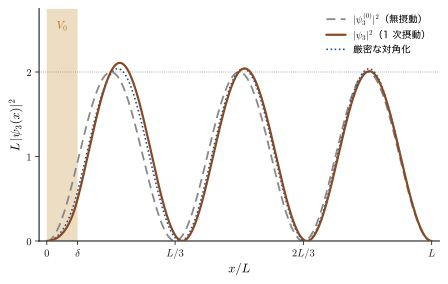
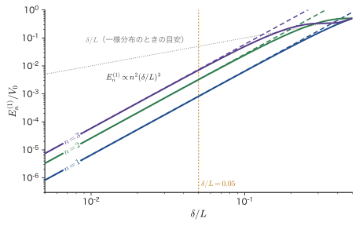
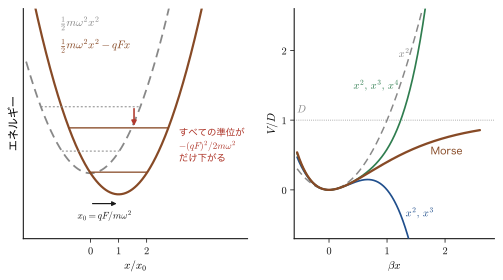
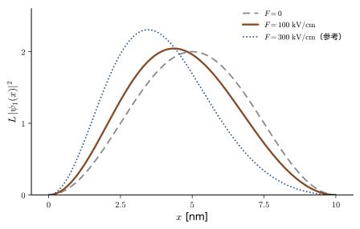
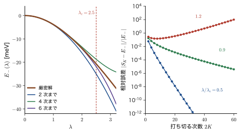
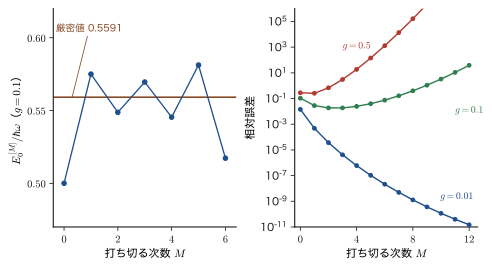

第27章時間に依存しない摂動論 — 非縮退の 1 次・2 次摂動
水素原子の Schrödinger（シュレーディンガー）方程式は，エネルギーも波動関数も式で書けるほどきれいに解ける．ところが，電子が 1 個増えてヘリウム原子になると，電子どうしの Coulomb 反発 $e_0^2/(4\pi\varepsilon_0r_{12})$ が加わっただけで，解析的にはもう解けない．電場や磁場の中に置かれた原子，結晶の中の磁性イオン，分子振動のわずかな非調和性——現実の系の Hamilton 演算子は，たいてい「厳密に解ける主要部分」と「解けないが小さい補正」の和の形をしている．摂動論（perturbation theory）は，主要部分の解を出発点にして，補正の効果を小さな量の冪（1 次，2 次，…）として系統的に計算する方法であり，量子力学を材料の問題に使うときの最も基本的な道具である．
この考え方は古典物理にもある．太陽と地球だけの 2 体問題は Kepler の楕円軌道として厳密に解ける（AD 03 第8章 8.2）．実際の地球には他の惑星の引力もはたらくが，太陽の引力に比べれば小さいので，「楕円軌道が少しずつずれる」と考えて補正すればよい．量子力学の摂動論も同じ発想である．ただし量子力学では，もう 1 つ，古典物理にない現象が起こる．補正によってエネルギーが動くだけでなく，もとの状態に他の状態が混ざるのである．この混ざりを式で追うと，エネルギーの 2 次の補正（準位の「反発」），原子の分極率，分子どうしの引力（van der Waals 力），量子井戸の電場によるエネルギーシフトなどが，同じ 1 つの公式から出てくる．
この章では，摂動を小さなつまみ $\lambda$ で調節する形 $\hat{H}=\hat{H}_0+\lambda\hat{V}$ を出発点に，$\lambda$ の次数ごとに方程式を分けて，1 次のエネルギー $E_n^{(1)}=\mel{\psi_n^{(0)}}{\hat{V}}{\psi_n^{(0)}}$ と 1 次の波動関数，2 次のエネルギー $E_n^{(2)}=-\sum_{i\ne n}\abs{V_{in}}^2/(E_i^{(0)}-E_n^{(0)})$ を，直交性だけを使って一行ずつ導く．そのうえで，無限井戸の壁ぎわの小さな段差（1 次摂動の応用），電場中の調和振動子，Morse ポテンシャルの非調和項，水素原子の分極率，量子井戸の量子閉じ込め Stark 効果，分子間の van der Waals 力（2 次摂動の応用）を計算し，最後に「摂動級数はいつまで信用してよいか」を，厳密に解ける 2 準位モデルで確かめる．
- $\hat{H}=\hat{H}_0+\lambda\hat{V}$ の固有値問題を $\lambda$ で展開し，次数ごとの方程式（0 次・1 次・2 次と一般の $k$ 次）を導くこと．中間規格化の意味
- 直交性だけから，1 次のエネルギー $E_n^{(1)}=V_{nn}$ と 1 次の波動関数の係数 $c_k=-V_{kn}/(E_k^{(0)}-E_n^{(0)})$ を導き，「他の状態の混ざり」の大きさを読めること
- 無限井戸の壁ぎわの段差（$V_0$，幅 $\delta$）の 1 次のエネルギー $2\pi^2V_0\delta^3n^2/(3L^3)$ と波動関数を，積和公式と Taylor 展開で計算し，なぜ $\delta^3$ に比例するかを説明できること
- 2 次のエネルギー $E_n^{(2)}$，2 次の波動関数の係数 $d_k$，3 次のエネルギーを導き，準位の反発と，基底状態で $E^{(2)}\lt0$ となること，Wigner の $2n+1$ 定理を理解すること
- 2 次摂動の応用として，電場中の調和振動子（厳密解と一致），Morse ポテンシャルの非調和項，水素原子の分極率 $\tfrac92(4\pi\varepsilon_0)a_0^3$，量子閉じ込め Stark 効果，van der Waals 係数 $C_6$ を見積もれること
- 2 準位モデルの収束半径 $\lambda_{\mathrm c}=\Delta/(2V)$ と，非調和振動子の摂動級数が漸近級数であることを理解し，摂動論が使える条件と使えない場合を判断できること
第V部の見取り図
本書の第V部（第27章〜第29章）は，「厳密に解ける問題からのずれ」を扱う摂動論の部である．
- 第27章（本章）：エネルギー準位が縮退していない（分母の $E_k^{(0)}-E_n^{(0)}$ が 0 にならない）場合の 1 次・2 次の摂動論．公式の導出と，井戸・振動子・原子・量子井戸・分子間力への応用，収束の問題．
- 第28章：縮退がある場合．本章の分母が 0 になって公式が破綻する理由と，縮退した準位の中で摂動の行列を対角化する方法（永年方程式）．電場中の水素原子の Stark 効果と，磁場中の原子の Zeeman 効果．
- 第29章：本章の 1 次摂動の公式を，電子間反発を「摂動」とみなしたヘリウム原子とリチウム原子に使う．
前の部からのつながり．第IV部で，軌道角運動量とスピンを合成して $\hat{\bm{L}}\cdot\hat{\bm{S}}$ の固有値問題を解いた（第25章，第26章）．あの計算は，縮退した準位の中で小さな摂動を対角化する操作そのものであり，第28章で摂動論の言葉で言い直す．次の部へ．摂動が大きくて級数がうまく収束しないときは，試行関数のエネルギーの期待値を最小にする変分原理（第VI部，第30章）に切り替える．また，摂動が時間に依存する場合の同じ構造 $V_{mn}/(E_m-E_n)$ は，第IX部の時間依存摂動論（第51章）に現れる．
もとにしたノート：望月泰英『物理学ノート 量子力学3』 pp. 19–26．
27.1 摂動とは何か — 解ける問題からの小さなずれ
27.1.1 厳密に解ける問題は少ない
ここまでの章で，Schrödinger 方程式を最後まで解けた問題を数えてみよう．無限井戸（第10章），有限井戸（第11章），調和振動子（第13章），水素原子（第15章），Morse ポテンシャル（第20章）である．どれも教科書に載るほど例外的にきれいな問題であって，実際の物質を相手にすると，電子が 2 個以上ある（電子間反発），外から電場や磁場がかかっている，ポテンシャルが完全な放物線ではない，といった「余計な項」が必ず加わり，厳密には解けなくなる．
そこで登場するのが近似の方法である．本書では 2 つの標準的な方法を学ぶ．1 つは，試行関数のエネルギーの期待値を最小にする変分法（第VI部）．もう 1 つが，この部で学ぶ摂動法（perturbation theory）である．摂動法は次のように考える．
イメージ：解ける問題の「近く」を調べる
全体の Hamilton 演算子が，厳密に解ける部分 $\hat{H}_0$ と，解けないが小さい部分 $\lambda\hat{V}$ の和で書けるとする．$\hat{H}_0$ の固有状態（エネルギーと波動関数）はすべてわかっているので，これを「座標軸」として使う．小さな $\lambda\hat{V}$ を加えると，エネルギー準位は少しずれ，波動関数は「もとの軸から少し傾いた」ものになる．傾きは，他の軸の方向への成分（他の固有状態の混ざり）で表される．ずれの大きさと傾きを，$\lambda$ の 1 次，2 次，… の順に求めていくのが摂動論である．
古典力学の摂動と比べておこう．太陽の周りを回る地球の軌道は，太陽だけを考えれば楕円である（AD 03 第8章 8.2）．木星などの引力は小さな補正として加わり，楕円の形や向きが少しずつずれる．量子力学でも「小さな補正で準位が少しずれる」という点は同じだが，量子力学にはさらに，補正によって別の状態が混ざるという描像がある．準位のずれ（エネルギー）だけでなく，電子の分布（波動関数）が変わるという意味である．
27.1.2 摂動として扱われる物理
摂動論が使われる場面は非常に広い．表27.1 に，代表的なものと本書での扱われる場所を挙げる．
| 物理 | 解ける問題 $\hat{H}_0$ | 摂動 $\hat{V}$ | 本書での場所 |
|---|---|---|---|
| 電場中の原子（Stark 効果，分極率） | 水素原子 | $e_0F\hat{z}$ | 第28章，27.6 節 |
| 磁場中の原子（Zeeman 効果） | 原子の軌道・スピン | $(\mu_{\mathrm B}/\hbar)B(\hat{L}_z+g_{\mathrm e}\hat{S}_z)$ | 第28章 28.5 節（正常 Zeeman 効果），第26章（異常 Zeeman 効果・Landé の $g$） |
| ヘリウム・リチウムの電子間反発 | 反発のない独立電子 | $e_0^2/(4\pi\varepsilon_0r_{12})$ | 第29章 |
| スピン軌道相互作用 | 水素様原子の軌道 | $\xi(r)\hat{\bm{L}}\cdot\hat{\bm{S}}$ | 第26章 |
| 結晶場による d 軌道の分裂 | 自由イオンの 3d 軌道 | 配位子の点電荷のつくる場 | 第28章 28.6 節（縮退の解け方），第43章・第44章 |
| 分子振動の非調和項 | 調和振動子 | $a\hat{x}^3+c\hat{x}^4$ | 27.3，27.6 節，第20章 |
| 量子井戸に電場をかける | 無限井戸 | $e_0F\hat{x}$ | 27.6 節 |
| 分子間力（van der Waals 力） | 離れた 2 つの原子 | 双極子–双極子相互作用 | 27.6 節 |
| 光との相互作用（時間に依存する摂動） | 原子・分子・結晶 | $-\hat{\bm{d}}\cdot\bm{E}(t)$ | 第51章 |
結晶中の電子のバンドも，「ほとんど自由な電子」の近似では，自由電子を出発点にして周期ポテンシャルを摂動として扱う．ゾーン境界から離れたところでは，自由電子を出発点にした非縮退の 2 次摂動（準位の反発，27.5.5 節）でバンドの曲がり（有効質量の補正）が説明できる．一方，ゾーン境界（Bragg 反射の条件）では 2 つの平面波のエネルギーが一致して縮退するので，本章の公式は分母が 0 になって使えない．その場所では第28章の縮退摂動論でバンドギャップが現れる（姉妹編「固体物理学（AD 06）」第16章）．
27.1.3 記号の約束
記号：本書の $\hat{V}$ と，関連シミュレーター・他の資料の $\hat{H}'$，$\hat{H}^{\mathrm P}$
本書では，全体の Hamilton 演算子を
$$ \hat{H}=\hat{H}_0+\lambda\hat{V} $$と書く．$\hat{H}_0$ は厳密に解ける Hamilton 演算子（無摂動の Hamilton 演算子），$\hat{V}$ は摂動の「形」を表す演算子，$\lambda$ は摂動の強さを調節する実数（摂動パラメータ）である．$\hat{H}_0$ の固有値を $E_n^{(0)}$，固有関数を $\psi_n^{(0)}$ と書く．上付きの $(0)$ は「摂動がない」ことを表し，$(1)$，$(2)$，… は摂動の 1 次，2 次，… の補正を表す．
関連シミュレーター「摂動論」（simulator）やマテリアル計算科学（AD 05，第4章）は，同じものを $\hat{H}^{(0)}$，$\hat{H}'$ と書き（AD 05 では $\hat{H}$ を花文字 $\hat{\mathcal{H}}$ で書く），摂動項の全体を $\hat{H}^{\mathrm P}=\lambda\hat{H}'$（$\mathrm{P}$ は perturbation の頭文字）と書く．対応は次のとおりである．
| 本書 | シミュレーター・AD 05 | 意味 |
|---|---|---|
| $\hat{H}_0$ | $\hat{H}^{(0)}$ | 厳密に解ける Hamilton 演算子 |
| $\hat{V}$ | $\hat{H}'$ | 摂動の形（$\lambda$ を含まない） |
| $\lambda\hat{V}$ | $\hat{H}^{\mathrm P}$ | 摂動項の全体 |
| $V_{mn}=\mel{\psi_m^{(0)}}{\hat{V}}{\psi_n^{(0)}}$ | $\mel{\psi_m^{(0)}}{\hat{H}'}{\psi_n^{(0)}}$ | 摂動の行列要素 |
シミュレーター②の 2 準位モデルでスライダーを動かす $V$ は，本書の行列要素 $V_{12}$ と同じ量である．なお，解ける側のポテンシャルエネルギーは，摂動 $\hat{V}$ と紛れないように小文字の $v(\bm{r})$ で書き，$\hat{H}_0=-\dfrac{\hbar^2}{2m}\nabla^2+v(\bm{r})$ とする．
状態の番号は，一般論では $n=0,1,2,\dots$（基底状態が $n=0$）と数える．ただし，箱の中の粒子（無限井戸）と水素原子は $n=1,2,3,\dots$ から始まる慣習なので，27.4 節の井戸の例では $n=1,2,\dots$ とする．「$\sum_{i\ne n}$」は，$n$ 番目以外のすべての状態についての和を表す．波長の $\lambda$ とは別の記号なので，混同しないこと（この章に波長は出てこない）．
27.1.4 つまみとしての $\lambda$，「小さい」とは何か
$\hat{H}=\hat{H}_0+\lambda\hat{V}$ の $\lambda$ は，理論の上のつまみである．$\lambda=0$ が解ける問題，$\lambda=1$ が現実の問題であり，つまみを $0$ から少しずつ回しながら，エネルギーと波動関数がどう変わるかを追う．$\lambda$ は計算の補助線であって，実在の物理量ではない．最後に $\lambda=1$ と置けば，$\lambda\hat{V}$ が $\hat{V}$ になる．
では「摂動が小さい」とは何を意味するのだろうか．「$\hat{V}$ の値が小さい」だけでは，単位（エネルギーの大きさ）を選べば何とでも言えるので意味がない．波動関数の係数 $c_k$ と 2 次以上のエネルギー補正は，すべて無次元の比 $$ \frac{\abs{V_{mn}}}{\abs{E_m^{(0)}-E_n^{(0)}}} $$ （摂動の行列要素と，準位の間隔の比）を含む形で現れる（1 次のエネルギーは $V_{nn}$ そのものである）．この比が $1$ に比べて十分小さいときに，摂動論がよく成り立つ．27.7 節で，これが 2 準位モデルで厳密に確かめられることを示す．
27.1.5 行列要素と完全系による展開
摂動論の計算では，無摂動の固有関数 $\psi_m^{(0)}$，$\psi_n^{(0)}$ で摂動 $\hat{V}$ をはさんだ積分がくり返し現れる．これを行列要素と呼ぶ．
定義27.1 摂動の行列要素
無摂動の固有関数 $\psi_m^{(0)}$，$\psi_n^{(0)}$ に対して，
\begin{equation} V_{mn}\equiv\mel{\psi_m^{(0)}}{\hat{V}}{\psi_n^{(0)}}=\int\psi_m^{(0)*}(\bm{r})\,\hat{V}\,\psi_n^{(0)}(\bm{r})\dd\tau \label{eq:27-Vmn} \end{equation}を，摂動 $\hat{V}$ の行列要素という（$\dd\tau$ は体積要素．1 次元なら $\dd x$）．本書では $\mel{\psi_m^{(0)}}{\hat{V}}{\psi_n^{(0)}}$ を，$\mel{m^{(0)}}{\hat{V}}{n^{(0)}}$ あるいは単に $\mel{m}{\hat{V}}{n}$ とも書く（ケットの記法は10.2 節）．
$\hat{V}$ が Hermite（エルミート）演算子（実数の物理量に対応する）なら，$V_{nm}=V_{mn}^*$ である．特に対角要素 $V_{nn}=\mel{\psi_n^{(0)}}{\hat{V}}{\psi_n^{(0)}}$ は実数で，「状態 $\psi_n^{(0)}$ での $\hat{V}$ の期待値」である．行列の言葉では，$V_{mn}$ は，$\hat{V}$ を無摂動の固有関数を基底にとって行列で表したときの $(m,n)$ 成分である（第24章で角運動量について同じことをした）．
次に，摂動論のもう 1 つの土台である完全系による展開を復習する．$\hat{H}_0$ は Hermite 演算子なので，その固有関数の組 $\{\psi_i^{(0)}\}$ は次の性質をもつ．
- 正規直交性：$\braket{\psi_i^{(0)}}{\psi_j^{(0)}}=\delta_{ij}$（10.2 節）．
- 完全性：（境界条件を満たす）任意の関数 $\varphi$ が，$\varphi=\sum_ic_i\psi_i^{(0)}$ と展開できる．係数は，両辺に $\bra{\psi_j^{(0)}}$ をかけて直交性を使えば $c_j=\braket{\psi_j^{(0)}}{\varphi}$ と求まる．
これは，ベクトルを正規直交基底 $\bm{e}_i$ で $\bm{a}=\sum_i(\bm{e}_i\cdot\bm{a})\bm{e}_i$ と展開するのと同じ形である．無限井戸では，$\psi_k^{(0)}=\sqrt{2/L}\sin(k\pi x/L)$ による展開が Fourier 正弦級数そのものになる（大学数学 第28章 28.3）．摂動論では，これから求める 1 次の補正 $\psi_n^{(1)}$ を，この展開で書く．摂動を受けた状態は，図27.1 のように，無摂動の状態を軸とするベクトルがわずかに傾いたものと見ることができる．
注意：連続スペクトルがある系
水素原子のように，束縛状態（$E\lt0$，とびとびの準位）のほかに電離した状態（$E\gt0$，連続的なエネルギー）をもつ系では，完全系にこの連続状態も含める必要があり，和 $\sum_i$ は「束縛状態についての和」＋「連続状態についての積分」になる．27.6 節の水素原子の分極率で，この効果が全体の約 19 % に達することを見る．
例題27.1 水素原子の電場は「摂動」と見なせるか
水素原子の基底状態（1s）に，強さ $F=1.0\times10^{7}\ \mathrm{V/m}$（$=100\ \mathrm{kV/cm}$．実験室でつくれるかなり強い電場）の一様な電場を $z$ 方向にかける．電子は電荷 $-e_0$ をもつので，$-\hat{\bm{d}}\cdot\bm{E}$（$\hat{\bm{d}}=-e_0\hat{\bm{r}}$）より摂動は $\hat{V}=e_0F\hat{z}$ である．この摂動の大きさを準位間隔と比べ，摂動として扱えるかを判断せよ．
解答 まず単位を定める．$E_{\mathrm h}=e_0^2/(4\pi\varepsilon_0a_0)=27.211\ \mathrm{eV}$ は水素原子のエネルギーの単位（Hartree）で，水素原子の準位は $E_n=-E_{\mathrm h}/(2n^2)$ と書ける．したがって $E_2-E_1=\tfrac38E_{\mathrm h}=10.20\ \mathrm{eV}$ である．次に，1s と直接つながる（$\hat{z}$ の行列要素が 0 でない）状態は，$\Delta l=\pm1$ で $m$ が同じ状態，すなわち $l=1$，$m=0$ の $n\mathrm{p}_0$ である（$\hat{z}\propto\cos\theta\propto Y_1^0$ なので，$Y_0^0$ とつながるのは $Y_1^0$ だけ）．ここでは代表として $2\mathrm{p}_0$ をとる．その行列要素は，動径部分と角度部分に分けて計算する．水素原子の動径関数（$a_0=1$ の単位）は $R_{10}=2e^{-r}$，$R_{21}=\dfrac{1}{2\sqrt6}\,r\,e^{-r/2}$ なので，
$$ \int_0^\infty R_{21}R_{10}\,r^3\dd r=\frac{2}{2\sqrt6}\int_0^\infty r^4e^{-3r/2}\dd r=\frac{1}{\sqrt6}\cdot\frac{4!}{(3/2)^5}=\frac{1}{\sqrt6}\cdot\frac{24\cdot32}{243}=\frac{128\sqrt6}{243}\quad(\text{単位 }a_0) $$である．角度部分は $\mel{Y_1^0}{\cos\theta}{Y_0^0}=1/\sqrt3$ なので，
$$ \mel{2\mathrm{p}_0}{\hat{z}}{1\mathrm{s}}=\frac{128\sqrt6}{243}\cdot\frac{1}{\sqrt3}\,a_0=\frac{128\sqrt2}{243}\,a_0=0.7449\,a_0 $$を得る．したがって摂動の行列要素は $V_{21}=0.7449\,e_0Fa_0=0.7449\times(1.0\times10^{7}\ \mathrm{V/m})\times(5.292\times10^{-11}\ \mathrm{m})\,e_0=3.94\times10^{-4}\ \mathrm{eV}$．一方，準位間隔は $E_2-E_1=10.20\ \mathrm{eV}$ だから，比は
$$ \frac{\abs{V_{21}}}{E_2^{(0)}-E_1^{(0)}}=\frac{3.94\times10^{-4}\ \mathrm{eV}}{10.20\ \mathrm{eV}}=3.9\times10^{-5} $$である．別の見方として，原子内部で電子が核から受ける電場の大きさ $e_0/(4\pi\varepsilon_0a_0^2)=5.14\times10^{11}\ \mathrm{V/m}$ と比べると，$F/(5.14\times10^{11}\ \mathrm{V/m})=1.9\times10^{-5}$ で，同じ程度に小さい．いずれの見方でも比は $10^{-5}$ のオーダーなので，実験室の強電場は水素原子にとって非常に小さな摂動であり，摂動論が極めてよく成り立つ．
例題27.2 完全系展開の練習 — なぜ $k=0$ の項は現れないのか
幅 $L$ の無限井戸（$0\le x\le L$）で，基底状態 $\psi_1^{(0)}=\sqrt{2/L}\,\sin(\pi x/L)$ に小さな摂動を加えたときの状態は，$\psi_k^{(0)}=\sqrt{2/L}\,\sin(k\pi x/L)$ の重ね合わせで書ける．その和が $k=1$ から始まって，$k=0$ の項を含まないのはなぜか．
解答 理由は 2 つある．第一に，$k=0$ とすると $\sin(0\cdot\pi x/L)=0$ で，「関数」が恒等的に 0 になる．これは規格化できない（$\braket{\psi}{\psi}=0$）ので状態ではない．第二に，より本質的な理由として，無限井戸で許される波動関数は境界条件 $\psi(0)=\psi(L)=0$ を満たす関数であり，摂動が有限の大きさなら摂動を受けた波動関数もこの条件を満たす．境界条件を満たす関数の集合の完全系は，$\{\sin(k\pi x/L)\}_{k=1,2,\dots}$ である．定数関数や $\cos(k\pi x/L)$ は $x=0$ で $0$ にならないので，この関数空間に含まれない．
実際，$[0,L]$ 上の 2 乗可積分な関数 $\varphi$ に対して，係数 $c_k=\sqrt{2/L}\int_0^L\varphi(x)\sin(k\pi x/L)\dd x$（$k=1,2,\dots$）による展開が（2 乗平均の意味で）$\varphi$ に収束する（大学数学 第28章 28.3 の Fourier 正弦級数）．一般論の式 $\sum_{i=0}^{\infty}$ を井戸に使うときは，$n=1$ から始まる番号付けに合わせて $k=1,2,\dots$ と読み替える（$k=0$ の項は，あっても $\sin0=0$ で自動的に消える）．
27.2 $\lambda$ による展開と次数ごとの方程式
27.2.1 出発点：無摂動の問題と摂動をふくむ問題
摂動論の出発点となる「解けている問題」は，時間を含まない Schrödinger 方程式
\begin{equation} \hat{H}_0\,\psi_n^{(0)}=E_n^{(0)}\,\psi_n^{(0)},\qquad \hat{H}_0=-\frac{\hbar^2}{2m}\nabla^2+v(\bm{r}) \label{eq:27-H0} \end{equation}である．ここで $v(\bm{r})$ は解けている側のポテンシャルエネルギー（無限井戸や調和振動子，水素原子の Coulomb ポテンシャルなど），$m$ は粒子の質量である．前節で断ったとおり，上付きの $(0)$ は「摂動がない」ことを表す．エネルギー $E_n^{(0)}$ と正規直交な固有関数 $\psi_n^{(0)}$ は，すべての $n$ について既知とする．
この系に，摂動項 $\lambda\hat{V}$（$\lambda$ は小さい実数）を加えた全体の Hamilton 演算子
\begin{equation} \hat{H}=\hat{H}_0+\lambda\hat{V} \label{eq:27-H} \end{equation}の固有値問題を解きたい．すなわち，次の 3 つの式から出発する．
\begin{align} \hat{H}\psi_n&=E_n\psi_n \label{eq:27-tise}\\ \psi_n&=\psi_n^{(0)}+\lambda\psi_n^{(1)}+\lambda^2\psi_n^{(2)}+\cdots \label{eq:27-psi-exp}\\ E_n&=E_n^{(0)}+\lambda E_n^{(1)}+\lambda^2E_n^{(2)}+\cdots \label{eq:27-E-exp} \end{align}式 \eqref{eq:27-tise} は求めたい方程式，式 \eqref{eq:27-psi-exp}，\eqref{eq:27-E-exp} は，解 $\psi_n$ とエネルギー $E_n$ が，$\lambda=0$ のときの解 $\psi_n^{(0)}$，$E_n^{(0)}$ のまわりで $\lambda$ の冪級数に展開できるという仮定である．$\psi_n^{(k)}$ と $E_n^{(k)}$ が，摂動の $k$ 次の補正である．これらをまだ知らない未知の量として，式 \eqref{eq:27-tise} に代入して決めていく．
27.2.2 $\lambda$ の次数ごとに整理する
まず，式 \eqref{eq:27-tise} の左辺 $\hat{H}\psi_n$ に，式 \eqref{eq:27-H} と \eqref{eq:27-psi-exp} を代入して展開する．分配法則で 1 項ずつかけ合わせると，
\begin{align*} \hat{H}\psi_n&=(\hat{H}_0+\lambda\hat{V})\bigl(\psi_n^{(0)}+\lambda\psi_n^{(1)}+\lambda^2\psi_n^{(2)}+\cdots\bigr)\\ &=\hat{H}_0\psi_n^{(0)}+\lambda\hat{H}_0\psi_n^{(1)}+\lambda^2\hat{H}_0\psi_n^{(2)}+\cdots +\lambda\hat{V}\psi_n^{(0)}+\lambda^2\hat{V}\psi_n^{(1)}+\lambda^3\hat{V}\psi_n^{(2)}+\cdots \end{align*}となる．$\lambda$ の同じ冪ごとにまとめると（$\lambda^2$ の項は，$\hat{H}_0\psi_n^{(2)}$ と，$\lambda\hat{V}$ が $\lambda\psi_n^{(1)}$ にかかったもの $\hat{V}\psi_n^{(1)}$ の和である），
\begin{equation} \hat{H}\psi_n=\hat{H}_0\psi_n^{(0)}+\lambda\bigl(\hat{V}\psi_n^{(0)}+\hat{H}_0\psi_n^{(1)}\bigr)+\lambda^2\bigl(\hat{V}\psi_n^{(1)}+\hat{H}_0\psi_n^{(2)}\bigr)+\cdots \label{eq:27-lhs} \end{equation}を得る．同様に，右辺 $E_n\psi_n$ に，式 \eqref{eq:27-psi-exp} と \eqref{eq:27-E-exp} を代入して展開する．
\begin{align} E_n\psi_n&=\bigl(E_n^{(0)}+\lambda E_n^{(1)}+\lambda^2E_n^{(2)}+\cdots\bigr)\bigl(\psi_n^{(0)}+\lambda\psi_n^{(1)}+\lambda^2\psi_n^{(2)}+\cdots\bigr)\notag\\ &=E_n^{(0)}\psi_n^{(0)}+\lambda\bigl(E_n^{(0)}\psi_n^{(1)}+E_n^{(1)}\psi_n^{(0)}\bigr)+\lambda^2\bigl(E_n^{(0)}\psi_n^{(2)}+E_n^{(1)}\psi_n^{(1)}+E_n^{(2)}\psi_n^{(0)}\bigr)+\cdots \label{eq:27-rhs} \end{align}ここで $\lambda^2$ の係数は，2 つの級数の積から $\lambda^2$ を与える組合せ，すなわち $(0,2)$，$(1,1)$，$(2,0)$ の 3 通りの積を拾ったものである．一般に $\lambda^k$ の係数は，$E_n^{(j)}\psi_n^{(k-j)}$（$j=0,1,\dots,k$）の和になる．
式 \eqref{eq:27-tise} は，$\lambda$ の値によらず，つまみ $\lambda$ をどこに置いても成り立つ式（$\lambda$ の恒等式）である．したがって，式 \eqref{eq:27-lhs} と \eqref{eq:27-rhs} の 2 つのべき級数は，$\lambda$ の各冪の係数が等しくなければならない．
数学の道具：べき級数の一意性
$\lambda$ を含む恒等式 $\sum_{k=0}^{\infty}a_k\lambda^k=\sum_{k=0}^{\infty}b_k\lambda^k$ が，$\lambda=0$ の近くのすべての $\lambda$ について成り立つなら，$a_k=b_k$（すべての $k$）である．実際，$\lambda\to0$ とすれば $a_0=b_0$，両辺から $a_0$ を引いて $\lambda$ で割って再び $\lambda\to0$ とすれば $a_1=b_1$，…とくり返して順に示せる．これは Taylor 展開の係数が微分係数 $f^{(k)}(0)/k!$ で一意に決まることと同じ内容である（大学数学 第4章 4.2）．ここでは，係数が数ではなく波動関数（ベクトル）である点だけが違うが，同じ議論が成り立つ．
そこで $\lambda^0$，$\lambda^1$，$\lambda^2$ の係数を比べると，次の 3 つの方程式が得られる．
\begin{align} \hat{H}_0\psi_n^{(0)}&=E_n^{(0)}\psi_n^{(0)} \label{eq:27-order0}\\ \hat{V}\psi_n^{(0)}+\hat{H}_0\psi_n^{(1)}&=E_n^{(1)}\psi_n^{(0)}+E_n^{(0)}\psi_n^{(1)} \label{eq:27-order1}\\ \hat{V}\psi_n^{(1)}+\hat{H}_0\psi_n^{(2)}&=E_n^{(2)}\psi_n^{(0)}+E_n^{(1)}\psi_n^{(1)}+E_n^{(0)}\psi_n^{(2)} \label{eq:27-order2} \end{align}式 \eqref{eq:27-order0} は無摂動項（$\lambda^0$）で，最初に与えた「解けている問題」の Schrödinger 方程式そのものである．式 \eqref{eq:27-order1} は1 次摂動項（$\lambda^1$）を，式 \eqref{eq:27-order2} は2 次摂動項（$\lambda^2$）を決める方程式である．未知数は，式 \eqref{eq:27-order1} では $E_n^{(1)}$ と $\psi_n^{(1)}$，式 \eqref{eq:27-order2} では $E_n^{(2)}$ と $\psi_n^{(2)}$ で，$1$ 次の結果を使えば $2$ 次の方程式が解ける，という階段状の構造になっている．次の 27.3 節では式 \eqref{eq:27-order1} を，27.5 節では式 \eqref{eq:27-order2} を解く．
27.2.3 一般の $k$ 次の方程式と中間規格化
同じ操作を $\lambda^k$ の係数について行うと，任意の次数の方程式が得られる．$\lambda^k$ の係数は，左辺が $\hat{H}_0\psi_n^{(k)}+\hat{V}\psi_n^{(k-1)}$，右辺が $\sum_{j=0}^{k}E_n^{(j)}\psi_n^{(k-j)}$ である．右辺の $j=0$ の項 $E_n^{(0)}\psi_n^{(k)}$ を左辺に移すと，次の公式になる．
公式27.1 $k$ 次の摂動方程式（$k\ge1$）
\begin{equation} \bigl(\hat{H}_0-E_n^{(0)}\bigr)\psi_n^{(k)}=-\hat{V}\psi_n^{(k-1)}+\sum_{j=1}^{k}E_n^{(j)}\psi_n^{(k-j)} \label{eq:27-orderk} \end{equation}$k=1$ で式 \eqref{eq:27-order1}，$k=2$ で式 \eqref{eq:27-order2} に一致する．左辺の演算子 $\hat{H}_0-E_n^{(0)}$ は，$\psi_n^{(0)}$ にかけると 0 になる．
ここで 1 つ注意がある．式 \eqref{eq:27-orderk} の左辺は $(\hat{H}_0-E_n^{(0)})\psi_n^{(k)}$ の形なので，$\psi_n^{(k)}$ に $\psi_n^{(0)}$ の定数倍を足しても，左辺は変わらない（$(\hat{H}_0-E_n^{(0)})\psi_n^{(0)}=0$ だから）．つまり，方程式だけでは $\psi_n^{(k)}$ の中の $\psi_n^{(0)}$ 成分は決まらない．これは，Schrödinger 方程式が線形同次で，波動関数の大きさ（と位相）が方程式だけでは決まらない（10.2 節）ことに対応する．そこで，この自由度を次の約束で固定する．
定義27.2 中間規格化
$k\ge1$ のすべての補正が，$\psi_n^{(0)}$ 成分をもたないと約束する：
\begin{equation} \braket{\psi_n^{(0)}}{\psi_n^{(k)}}=0\qquad(k=1,2,3,\dots) \label{eq:27-imnorm} \end{equation}これを中間規格化（intermediate normalization）という．このとき $\braket{\psi_n^{(0)}}{\psi_n}=1$ となる．
中間規格化のもとでは，展開 $\psi_n^{(k)}=\sum_ic_i^{(k)}\psi_i^{(0)}$ で $n$ 番目の係数が 0 になる．すなわち，補正 $\psi_n^{(k)}$ は $\psi_n^{(0)}$ 以外の状態の重ね合わせだけでできている．この約束のもとの $\psi_n$ は，$\braket{\psi_n}{\psi_n}=1$ とは限らない（大きさは 27.3 節の最後で $1+O(\lambda^2)$ と評価し，必要なら最後に規格化し直す）．
中間規格化を使うと，各次数のエネルギーを与える簡潔な公式が得られる．式 \eqref{eq:27-orderk} の両辺に左から $\bra{\psi_n^{(0)}}$ をかけると，左辺は $\bra{\psi_n^{(0)}}(\hat{H}_0-E_n^{(0)})=0$（$\hat{H}_0$ の Hermite 性）より $0$ になる．右辺は，$-\mel{\psi_n^{(0)}}{\hat{V}}{\psi_n^{(k-1)}}+\sum_{j=1}^{k}E_n^{(j)}\braket{\psi_n^{(0)}}{\psi_n^{(k-j)}}$ で，中間規格化により $\braket{\psi_n^{(0)}}{\psi_n^{(k-j)}}$ は $j=k$ のとき（$\braket{\psi_n^{(0)}}{\psi_n^{(0)}}=1$）だけ残る．したがって
\begin{equation} E_n^{(k)}=\mel{\psi_n^{(0)}}{\hat{V}}{\psi_n^{(k-1)}}\qquad(k\ge1) \label{eq:27-Ek} \end{equation}となる．$k=1$ なら $E_n^{(1)}=\mel{\psi_n^{(0)}}{\hat{V}}{\psi_n^{(0)}}$ で，これは 27.3 節で直接導く公式と一致する．$k=2$ なら $E_n^{(2)}=\mel{\psi_n^{(0)}}{\hat{V}}{\psi_n^{(1)}}$，$k=3$ なら $E_n^{(3)}=\mel{\psi_n^{(0)}}{\hat{V}}{\psi_n^{(2)}}$ である．式 \eqref{eq:27-Ek} は，27.5 節の 3 次のエネルギーで使う．
注意：この展開は形式的なもの
式 \eqref{eq:27-psi-exp}，\eqref{eq:27-E-exp} の級数が収束するかどうかは，ここまでの議論では何も保証されていない．有限の $\lambda$ では，級数が収束せず，発散することもある．それでも摂動論が有用なのは，$\lambda$ が十分小さければ，最初の数項が真の値をよい精度で与える（漸近級数）からである．収束の問題は 27.7 節で，厳密に解ける 2 準位モデルを使って調べる．
例題27.3 $2\times2$ 行列で次数ごとの方程式を解く
2 つの状態（下の状態を 1，上の状態を 2 と番号付ける）をもつ系を，行列で $\hat{H}_0=\begin{pmatrix}0&0\\0&\Delta\end{pmatrix}$，$\hat{V}=\begin{pmatrix}0&V\\V&0\end{pmatrix}$ と表す（$\Delta=0.10\ \mathrm{eV}$，$V=0.02\ \mathrm{eV}$）．無摂動の状態は $\psi_1^{(0)}=\begin{pmatrix}1\\0\end{pmatrix}$（$E_1^{(0)}=0$），$\psi_2^{(0)}=\begin{pmatrix}0\\1\end{pmatrix}$（$E_2^{(0)}=\Delta$）である．中間規格化のもとで，下の状態の $E_1^{(1)}$，$\psi_1^{(1)}$，$E_1^{(2)}$，$\psi_1^{(2)}$ を，次数ごとの方程式 \eqref{eq:27-order1}，\eqref{eq:27-order2} から求めよ．また，厳密解 $E_-=\bigl(\Delta-\sqrt{\Delta^2+4\lambda^2V^2}\bigr)/2$ の $\lambda$ 展開と比べよ．
解答 1 次．$\psi_1^{(1)}=\begin{pmatrix}a_1\\a_2\end{pmatrix}$ とおく．中間規格化 $\braket{\psi_1^{(0)}}{\psi_1^{(1)}}=a_1=0$ より $\psi_1^{(1)}=\begin{pmatrix}0\\a_2\end{pmatrix}$．式 \eqref{eq:27-order1} の各項は，$\hat{V}\psi_1^{(0)}=\begin{pmatrix}0\\V\end{pmatrix}$，$\hat{H}_0\psi_1^{(1)}=\begin{pmatrix}0\\\Delta a_2\end{pmatrix}$，$E_1^{(1)}\psi_1^{(0)}=\begin{pmatrix}E_1^{(1)}\\0\end{pmatrix}$，$E_1^{(0)}\psi_1^{(1)}=0$ なので，第 1 成分は $0=E_1^{(1)}$，第 2 成分は $V+\Delta a_2=0$ となる．よって
$$ E_1^{(1)}=0,\qquad a_2=-\frac{V}{\Delta}\quad\Longrightarrow\quad\psi_1^{(1)}=\begin{pmatrix}0\\-V/\Delta\end{pmatrix} $$である．
2 次．$\psi_1^{(2)}=\begin{pmatrix}0\\b_2\end{pmatrix}$（第 1 成分は中間規格化で 0）とおく．式 \eqref{eq:27-order2} の各項は，$\hat{V}\psi_1^{(1)}=\begin{pmatrix}V\cdot(-V/\Delta)\\0\end{pmatrix}=\begin{pmatrix}-V^2/\Delta\\0\end{pmatrix}$，$\hat{H}_0\psi_1^{(2)}=\begin{pmatrix}0\\\Delta b_2\end{pmatrix}$，右辺は $E_1^{(2)}\psi_1^{(0)}+E_1^{(1)}\psi_1^{(1)}+E_1^{(0)}\psi_1^{(2)}=\begin{pmatrix}E_1^{(2)}\\0\end{pmatrix}$（$E_1^{(1)}=E_1^{(0)}=0$ を使った）．第 1 成分は $-V^2/\Delta=E_1^{(2)}$，第 2 成分は $\Delta b_2=0$ となる．よって
$$ E_1^{(2)}=-\frac{V^2}{\Delta}=-\frac{(0.02\ \mathrm{eV})^2}{0.10\ \mathrm{eV}}=-4.0\times10^{-3}\ \mathrm{eV}=-4.0\ \mathrm{meV},\qquad\psi_1^{(2)}=0 $$である．
厳密解との比較．$\sqrt{1+x}=1+\dfrac{x}{2}-\dfrac{x^2}{8}+\cdots$ を $x=4\lambda^2V^2/\Delta^2$ として使うと，$\sqrt{\Delta^2+4\lambda^2V^2}=\Delta\Bigl(1+\dfrac{2\lambda^2V^2}{\Delta^2}-\dfrac{2\lambda^4V^4}{\Delta^4}+\cdots\Bigr)$．したがって
$$ E_-=\frac{\Delta}{2}\Bigl(-\frac{2\lambda^2V^2}{\Delta^2}+\frac{2\lambda^4V^4}{\Delta^4}-\cdots\Bigr)=-\frac{V^2}{\Delta}\lambda^2+\frac{V^4}{\Delta^3}\lambda^4-\cdots $$で，$\lambda$ の 1 次の項は現れず（$E_1^{(1)}=0$），$\lambda^2$ の係数は $-V^2/\Delta=E_1^{(2)}$ に一致する．なお，このモデルでは $\lambda\to-\lambda$ としても $\hat{H}(\lambda)$ の固有値が変わらない（$\sigma_z$ で符号を反転できる）ので，$E_-$ は $\lambda$ の偶関数で，奇数次の項はすべて 0 になる．
27.3 1 次摂動 — エネルギーと波動関数
27.3.1 1 次の補正を完全系で展開する
1 次摂動を決める方程式は，式 \eqref{eq:27-order1}
$$ \hat{V}\psi_n^{(0)}+\hat{H}_0\psi_n^{(1)}=E_n^{(1)}\psi_n^{(0)}+E_n^{(0)}\psi_n^{(1)} $$である．未知の $\psi_n^{(1)}$ を，無摂動の固有関数 $\{\psi_i^{(0)}\}$ で展開する．$\{\psi_i^{(0)}\}$ は正規直交で完全な関数系なので（27.1.5 節），任意の関数がこの形に書ける：
\begin{equation} \psi_n^{(1)}=\sum_{i=0}^{\infty}c_i\,\psi_i^{(0)} \label{eq:27-psi1-exp} \end{equation}$c_i$ は決めるべき展開係数である．これを式 \eqref{eq:27-order1} に代入する．左辺の $\hat{H}_0\psi_n^{(1)}$ は，各項に $\hat{H}_0\psi_i^{(0)}=E_i^{(0)}\psi_i^{(0)}$ を使えるので，
\begin{align*} (\text{左辺})&=\hat{V}\psi_n^{(0)}+\hat{H}_0\sum_{i=0}^{\infty}c_i\psi_i^{(0)}=\hat{V}\psi_n^{(0)}+\sum_{i=0}^{\infty}c_iE_i^{(0)}\psi_i^{(0)}\\ (\text{右辺})&=E_n^{(1)}\psi_n^{(0)}+E_n^{(0)}\sum_{i=0}^{\infty}c_i\psi_i^{(0)} \end{align*}となる．右辺の第 2 項を左辺に移し，$c_i$ の和を 1 つにまとめると，
\begin{equation} \hat{V}\psi_n^{(0)}+\sum_{i=0}^{\infty}c_i\bigl(E_i^{(0)}-E_n^{(0)}\bigr)\psi_i^{(0)}=E_n^{(1)}\psi_n^{(0)} \label{eq:27-first-order-basic} \end{equation}を得る．これが，1 次のエネルギーと波動関数の両方を決める基本の式である．未知数は $E_n^{(1)}$ と $\{c_i\}$ で，方程式は関数の式なので，適当な関数を左からかけて積分する（内積をとる）と，数の式が取り出せる．
27.3.2 1 次のエネルギー
式 \eqref{eq:27-first-order-basic} の両辺に，左から $\bra{\psi_n^{(0)}}$ をかける（$\psi_n^{(0)*}$ をかけて全空間で積分する）．
$$ \mel{\psi_n^{(0)}}{\hat{V}}{\psi_n^{(0)}}+\sum_{i=0}^{\infty}c_i\bigl(E_i^{(0)}-E_n^{(0)}\bigr)\braket{\psi_n^{(0)}}{\psi_i^{(0)}}=E_n^{(1)}\braket{\psi_n^{(0)}}{\psi_n^{(0)}} $$ここで正規直交性 $\braket{\psi_i^{(0)}}{\psi_j^{(0)}}=\delta_{ij}$ を使う．左辺の和では $i=n$ の項だけが残り，そのときの因子が $E_n^{(0)}-E_n^{(0)}=0$ なので，
$$ \sum_{i=0}^{\infty}c_i\bigl(E_i^{(0)}-E_n^{(0)}\bigr)\braket{\psi_n^{(0)}}{\psi_i^{(0)}}=c_n\bigl(E_n^{(0)}-E_n^{(0)}\bigr)\cdot1=0 $$となり，和は完全に消える．右辺は $E_n^{(1)}\braket{\psi_n^{(0)}}{\psi_n^{(0)}}=E_n^{(1)}\cdot1$ である．したがって，次の結果が得られる．
公式27.2 1 次のエネルギー
\begin{equation} E_n^{(1)}=\mel{\psi_n^{(0)}}{\hat{V}}{\psi_n^{(0)}}=V_{nn} \label{eq:27-E1} \end{equation}1 次のエネルギー補正は，摂動 $\hat{V}$ の，無摂動の状態 $\psi_n^{(0)}$ での期待値である．波動関数の補正 $\psi_n^{(1)}$（係数 $c_i$）は，この式には現れない．
したがって，1 次まで求めた全エネルギーは，
\begin{equation} E_n\simeq E_n^{(0)}+\lambda E_n^{(1)}=E_n^{(0)}+\lambda\mel{\psi_n^{(0)}}{\hat{V}}{\psi_n^{(0)}}=E_n^{(0)}+\mel{\psi_n^{(0)}}{\lambda\hat{V}}{\psi_n^{(0)}} \label{eq:27-Etot1} \end{equation}である．最後の形は，「無摂動のエネルギーに，摂動項の期待値を加える」と読める．波動関数を直さなくても（無摂動のままで）エネルギーの 1 次補正が求まる点が，摂動論の大きな利点である．
イメージ：波動関数を「そのまま」にして，摂動を測るだけ
摂動 $\lambda\hat{V}$ を急に（状態が変形する暇を与えずに）加えたと想像すると，電子の分布 $\abs{\psi_n^{(0)}}^2$ はまだ元のままである．その分布のもとでの摂動エネルギーの平均が，$\lambda V_{nn}$ である．実際には状態も少し変形してエネルギーがさらに下がるが，その効果は $\lambda^2$ 以上の高次の項に入る．
Hellmann–Feynman の定理による確認
$E_n(\lambda)$ を $\hat{H}(\lambda)=\hat{H}_0+\lambda\hat{V}$ の固有値，$\psi_n(\lambda)$ を規格化された固有関数とする．$E_n(\lambda)=\mel{\psi_n}{\hat{H}(\lambda)}{\psi_n}$ を $\lambda$ で微分すると，積の微分（$\psi_n'\equiv\dd\psi_n/\dd\lambda$）で
$$ \frac{\dd E_n}{\dd\lambda}=\mel{\psi_n'}{\hat{H}}{\psi_n}+\mel{\psi_n}{\hat{H}}{\psi_n'}+\mel{\psi_n}{\hat{V}}{\psi_n} =E_n\bigl(\braket{\psi_n'}{\psi_n}+\braket{\psi_n}{\psi_n'}\bigr)+\mel{\psi_n}{\hat{V}}{\psi_n} $$となる（$\hat{H}\psi_n=E_n\psi_n$ と $\hat{H}$ の Hermite 性を使った）．括弧の中は $\dd\braket{\psi_n}{\psi_n}/\dd\lambda=\dd1/\dd\lambda=0$ なので，
$$ \frac{\dd E_n}{\dd\lambda}=\mel{\psi_n(\lambda)}{\hat{V}}{\psi_n(\lambda)} $$を得る．$\lambda=0$ とおくと $\dd E_n/\dd\lambda|_{\lambda=0}=E_n^{(1)}=\mel{\psi_n^{(0)}}{\hat{V}}{\psi_n^{(0)}}$ で，式 \eqref{eq:27-E1} と一致する．さらに右辺を $\lambda$ で展開すると $V_{nn}+2\lambda\,\mathrm{Re}\,\mel{\psi_n^{(0)}}{\hat{V}}{\psi_n^{(1)}}+\cdots$，左辺は $E_n^{(1)}+2\lambda E_n^{(2)}+\cdots$ なので，$E_n^{(2)}=\mathrm{Re}\,\mel{\psi_n^{(0)}}{\hat{V}}{\psi_n^{(1)}}$ も出る（式 \eqref{eq:27-Ek} と同じ結果）．
（導出終わり）
応用：基底状態の変分上限
$n=0$（基底状態）のとき，$E_0^{(0)}+\lambda E_0^{(1)}=\mel{\psi_0^{(0)}}{\hat{H}}{\psi_0^{(0)}}$ は，全 Hamilton 演算子 $\hat{H}$ の，試行関数 $\psi_0^{(0)}$ での期待値である．変分原理（第30章）により，これは真の基底エネルギー以上になる．すなわち1 次まで求めたエネルギーは，基底状態については真の値の上限を与える．ヘリウム原子の電子間反発の 1 次摂動（第29章）で $-74.83\ \mathrm{eV}$ と非相対論的な厳密値 $-2.9037\,E_{\mathrm h}=-79.01\ \mathrm{eV}$（実験値は $-79.005\ \mathrm{eV}$．2 つのイオン化エネルギー $24.587\ \mathrm{eV}$ と $54.418\ \mathrm{eV}$ の和）の関係がそうなっている．
27.3.3 1 次の波動関数
次に，波動関数の補正の係数 $c_k$ を求める．式 \eqref{eq:27-first-order-basic} の両辺に，左から $\bra{\psi_k^{(0)}}$ をかける（$k$ は任意の番号）．
\begin{equation} \mel{\psi_k^{(0)}}{\hat{V}}{\psi_n^{(0)}}+\sum_{i=0}^{\infty}c_i\bigl(E_i^{(0)}-E_n^{(0)}\bigr)\braket{\psi_k^{(0)}}{\psi_i^{(0)}}=E_n^{(1)}\braket{\psi_k^{(0)}}{\psi_n^{(0)}} \label{eq:27-project-k} \end{equation}ここで $k\ne n$ の場合と $k=n$ の場合に分けて考える．
[i] $k\ne n$ のとき．正規直交性により，左辺の和は $i=k$ の項だけが残り，$\braket{\psi_k^{(0)}}{\psi_k^{(0)}}=1$ を使うと $c_k\bigl(E_k^{(0)}-E_n^{(0)}\bigr)$ になる．右辺は $\braket{\psi_k^{(0)}}{\psi_n^{(0)}}=0$ なので $0$ である．よって式 \eqref{eq:27-project-k} は
$$ V_{kn}+c_k\bigl(E_k^{(0)}-E_n^{(0)}\bigr)=0\qquad\therefore\quad c_k=-\frac{V_{kn}}{E_k^{(0)}-E_n^{(0)}}=-\frac{\mel{\psi_k^{(0)}}{\hat{V}}{\psi_n^{(0)}}}{E_k^{(0)}-E_n^{(0)}} $$となる．ここで分母が 0 でない（$E_k^{(0)}\ne E_n^{(0)}$）ことを使った．縮退している場合はこの割り算ができない．それが破綻する場面は第28章で扱う．
[ii] $k=n$ のとき．式 \eqref{eq:27-project-k} の和の $i=n$ の項は因子 $E_n^{(0)}-E_n^{(0)}=0$ で消えるから，$\mel{\psi_n^{(0)}}{\hat{V}}{\psi_n^{(0)}}=E_n^{(1)}$ となり，前項の式 \eqref{eq:27-E1} に戻るだけである．$c_n$ は，どの式にも現れず決まらない．これは 27.2.3 節で述べた自由度そのもので，中間規格化 $\braket{\psi_n^{(0)}}{\psi_n^{(1)}}=c_n=0$ によって決める．すなわち，展開の和から $i=n$ を除く．
以上を式 \eqref{eq:27-psi1-exp} に代入して，波動関数の 1 次までの結果を得る．
公式27.3 1 次の波動関数
\begin{equation} \psi_n\simeq\psi_n^{(0)}+\lambda\psi_n^{(1)}=\psi_n^{(0)}-\lambda\sum_{i\ne n}\frac{V_{in}}{E_i^{(0)}-E_n^{(0)}}\,\psi_i^{(0)}=\psi_n^{(0)}-\sum_{i\ne n}\frac{\mel{\psi_i^{(0)}}{\lambda\hat{V}}{\psi_n^{(0)}}}{E_i^{(0)}-E_n^{(0)}}\,\psi_i^{(0)} \label{eq:27-psi-first} \end{equation}（$\sum_{i\ne n}$ は $n$ 以外のすべての状態についての和．中間規格化を仮定している．）
式 \eqref{eq:27-psi-first} の分母の並びは $E_i^{(0)}-E_n^{(0)}$ で，先頭に符号 $-$ がつく．教科書によっては同じ式を $\displaystyle\sum_{i\ne n}\frac{V_{in}}{E_n^{(0)}-E_i^{(0)}}\psi_i^{(0)}$ と書くが，分母の引き算の順序を入れ替えて符号を吸収しただけで，まったく同じ式である．本書ではこの章を通して，$E_i^{(0)}-E_n^{(0)}$ の形に統一する．
27.3.4 1 次の波動関数の読み方
公式 27.3 は，状態 $\psi_n$ に他の状態 $\psi_i^{(0)}$ が，係数 $\lambda c_i=-\lambda V_{in}/(E_i^{(0)}-E_n^{(0)})$ の重みで混ざることを示している．この式から読み取れることを整理しよう．
- 行列要素が大きいほど混ざる：分子 $V_{in}$ が大きい状態ほど，$\psi_n$ に強く混ざる．
- 準位が近いほど混ざる（分母効果）：分母 $E_i^{(0)}-E_n^{(0)}$ が小さい状態ほど，混ざりの重みが大きい．エネルギー的に近い状態は，摂動によって「つながりやすい」．分母が 0 に近づくと $c_i\to\infty$ となり，摂動論は使えなくなる（縮退，または準縮退．27.7 節，第28章）．
- 混ざらない状態がある（選択則）：$V_{in}=0$ なら，その状態は 1 次では混ざらない．たとえば $\hat{V}$ が座標の奇関数（電場の摂動 $e_0F\hat{z}$ など）のとき，$\psi_i^{(0)}$ と $\psi_n^{(0)}$ が同じパリティをもてば被積分関数が奇関数になり，積分は 0 になる．したがって，パリティが反対の状態だけが混ざる．
- 規格化：$\psi_n=\psi_n^{(0)}+\lambda\psi_n^{(1)}$ のノルムの 2 乗は，中間規格化（$\psi_n^{(1)}$ が $\psi_n^{(0)}$ に直交）により $\braket{\psi_n}{\psi_n}=1+\lambda^2\sum_{i\ne n}\abs{c_i}^2+O(\lambda^3)$ である．つまり 1 からのずれは $\lambda^2$ のオーダーで，1 次の範囲では規格化されているとみなしてよい．厳密に規格化するには，全体を $\bigl(1+\lambda^2\sum_{i\ne n}\abs{c_i}^2\bigr)^{-1/2}$ 倍する．このとき無摂動の状態 $\psi_n^{(0)}$ の重み（確率）は $1-\lambda^2\sum_{i\ne n}\abs{c_i}^2$ となり，残りの $\lambda^2\sum\abs{c_i}^2$ が他の状態に分配される．
例題27.4 1 次のエネルギー：一様な摂動と，節に置いた $\delta$ 関数
幅 $L$ の無限井戸（$0\le x\le L$，固有関数 $\psi_n^{(0)}=\sqrt{2/L}\sin(n\pi x/L)$，$n=1,2,\dots$）に，次の摂動を加える．(1) 井戸全体に一様な $\hat{V}=V_0$（定数）．(2) 井戸の中央に置いた $\hat{V}=\lambda_0\,\delta(x-L/2)$（$\lambda_0$ は「エネルギー×長さ」の次元をもつ定数．摂動パラメータの $\lambda$ とは別のもの）．それぞれ 1 次のエネルギー $E_n^{(1)}$ を求め，結果の意味を説明せよ．
解答 (1) 式 \eqref{eq:27-E1} より $E_n^{(1)}=\int_0^L\psi_n^{(0)}V_0\psi_n^{(0)}\dd x=V_0\int_0^L\bigl(\psi_n^{(0)}\bigr)^2\dd x=V_0$（規格化）．また $k\ne n$ の行列要素は $V_{kn}=V_0\braket{\psi_k^{(0)}}{\psi_n^{(0)}}=0$（直交性）なので，$c_k=0$ で波動関数は変わらない．全体に一様な定数の摂動は，すべての準位を同じ量 $V_0$ だけ持ち上げるだけで，波動関数を変えない．これは，Schrödinger 方程式でポテンシャルに定数を加えるとエネルギーだけが定数だけずれることと一致する（$\lambda=1$ の厳密な結果は $E_n=E_n^{(0)}+V_0$ で，1 次で完全に正しい）．
(2) $\delta$ 関数（Dirac のデルタ関数）は，幅を $0$ に，高さを $\infty$ にしながら面積を $1$ に保つ極限の関数である（大学数学 第30章 30.3）．$\lambda_0\,\delta(x-L/2)$ は，井戸の中央に置いた，薄くて高い障壁を理想化したものである．$\delta$ 関数の性質 $\int f(x)\delta(x-a)\dd x=f(a)$（$a$ が積分範囲の内側にあるとき）より，
$$ E_n^{(1)}=\lambda_0\,\bigl(\psi_n^{(0)}(L/2)\bigr)^2=\lambda_0\cdot\frac{2}{L}\sin^2\frac{n\pi}{2}=\begin{cases}2\lambda_0/L&(n=1,3,5,\dots)\\0&(n=2,4,6,\dots)\end{cases} $$である（$\sin^2(n\pi/2)$ は，$n$ が奇数で $1$，偶数で $0$）．奇数番の準位は，$n$ によらず同じ量 $2\lambda_0/L$ だけ持ち上がる．偶数番の準位は動かない．偶数番の状態は井戸の中央 $x=L/2$ に節をもち，そこでの確率密度が $0$ なので，中央に置いた摂動をまったく感じないのである．「節の位置にある摂動は効かない」というこの性質は，準位ごとに摂動の効き方が違うことの典型例である（$\delta$ 関数摂動による波動関数の混ざりは演習27.2）．
例題27.5 非調和振動子の 1 次摂動 — $x^4$ の項
調和振動子（質量 $m$，角振動数 $\omega$，$n=0,1,2,\dots$）に，$\hat{V}=\hbar\omega(\hat{x}/b)^4$（$b=\sqrt{\hbar/m\omega}$．摂動パラメータを $\lambda=g$ とする）を加える．1 次のエネルギー $E_n^{(1)}$ を昇降演算子で求めよ．$g=0.01$ で基底状態のエネルギーを 1 次まで求め，数値対角化の値 $0.50726\,\hbar\omega$ と比べよ．
解答 $b=\sqrt{\hbar/m\omega}$ は第13章で $x_0$ と書いた振動子の長さである．本章では $x_0$ を電場による中心のずれ（27.6.2 節）に使うので，振動子の長さを $b$ と書く．位置演算子は昇降演算子で $\hat{x}=\dfrac{b}{\sqrt2}(\hat{a}+\hat{a}^\dagger)$ と書ける（13.8 節）．よって $(\hat{x}/b)^4=\dfrac14(\hat{a}+\hat{a}^\dagger)^4$．$\hat{a}\ket{n}=\sqrt{n}\ket{n-1}$，$\hat{a}^\dagger\ket{n}=\sqrt{n+1}\ket{n+1}$ を使う．$(\hat{a}+\hat{a}^\dagger)^4$ を展開すると $2^4=16$ 個の積が現れるが，対角要素 $\mel{n}{\cdot}{n}$ に寄与するのは，$\hat{a}$ と $\hat{a}^\dagger$ が 2 個ずつの積だけである（個数が合わないと状態の番号が戻らない）．この 6 個の積を，右から順に作用させて評価する：
| 積（右から作用） | $\mel{n}{\cdot}{n}$ |
|---|---|
| $\hat{a}\hat{a}\hat{a}^\dagger\hat{a}^\dagger$ | $(n+1)(n+2)$ |
| $\hat{a}\hat{a}^\dagger\hat{a}\hat{a}^\dagger$ | $(n+1)^2$ |
| $\hat{a}\hat{a}^\dagger\hat{a}^\dagger\hat{a}$ | $n(n+1)$ |
| $\hat{a}^\dagger\hat{a}\hat{a}\hat{a}^\dagger$ | $n(n+1)$ |
| $\hat{a}^\dagger\hat{a}\hat{a}^\dagger\hat{a}$ | $n^2$ |
| $\hat{a}^\dagger\hat{a}^\dagger\hat{a}\hat{a}$ | $n(n-1)$ |
たとえば 1 行目は，$\hat{a}^\dagger\hat{a}^\dagger\ket{n}=\sqrt{(n+1)(n+2)}\ket{n+2}$ の後に $\hat{a}\hat{a}$ を作用させると $\sqrt{(n+1)(n+2)}\cdot\sqrt{n+2}\sqrt{n+1}\ket{n}$ となることから．和は $(n^2+3n+2)+(n^2+2n+1)+(n^2+n)+(n^2+n)+n^2+(n^2-n)=6n^2+6n+3$ である．したがって
$$ E_n^{(1)}=\hbar\omega\cdot\frac14\,(6n^2+6n+3)=\frac{3\,(2n^2+2n+1)}{4}\,\hbar\omega $$を得る（全エネルギーへの寄与は $\lambda E_n^{(1)}=gE_n^{(1)}$）．基底状態（$n=0$）では $E_0^{(1)}=\tfrac34\hbar\omega$．$g=0.01$ のとき，1 次までの $E_0\simeq\bigl(\tfrac12+0.01\times\tfrac34\bigr)\hbar\omega=0.5075\,\hbar\omega$．数値対角化の値 $0.50726\,\hbar\omega$ との差は $2.4\times10^{-4}\hbar\omega$ で，これは 2 次以降の補正（$g^2$ の係数は $-21/8$ で，$-\tfrac{21}{8}\times10^{-4}=-2.6\times10^{-4}$）の大きさと一致する．なお，$E_n^{(1)}$ が $n^2$ に比例して増える（高い準位ほど摂動の影響が大きい）ことは，高い準位ほど $x$ の広がりが大きく，$x^4$ の期待値が大きいことによる．摂動論が使えるのは $g\,n^2\ll1$ 程度までである．
27.4 1 次摂動の応用 — 井戸の壁ぎわの段差
27.4.1 問題の設定
1 次摂動の公式（公式 27.2，27.3）を，解が式で書ける無限井戸の問題に適用してみよう．井戸の底の壁ぎわに，高さ $V_0$，幅 $\delta$ の小さな段差がある状況を考える．半導体の量子井戸で，界面の組成が少しにじんで，壁ぎわのポテンシャルが少しだけ持ち上がっている場合の単純化されたモデルである．
例27.1 無限井戸の壁ぎわの段差
質量 $m$ の粒子が，次のポテンシャルエネルギー $V_{\mathrm w}(x)$ の中に置かれている．
$$ V_{\mathrm w}(x)=\begin{cases}V_0 & (0\le x\le\delta)\quad\text{ただし }\dfrac{\delta}{L}\ll1\\[1mm] 0 & (\delta\le x\le L)\\[1mm] \infty & (x\lt0,\ L\lt x)\end{cases} $$1 次摂動の計算を含めて，粒子のエネルギーと波動関数を求めよ．
ポテンシャルの形は図27.2 のとおりである．以下の 27.4.2〜27.4.5 節で，行を飛ばさずに解く．結果は式 \eqref{eq:27-Ewell}，\eqref{eq:27-psi-well} である．
27.4.2 無摂動の問題と摂動の設定
解ける問題 $\hat{H}_0$ として，段差のない無限井戸を選ぶ．エネルギーと固有関数は（第10章），$n=1,2,3,\dots$ として
\begin{equation} E_n^{(0)}=\frac{\pi^2\hbar^2}{2mL^2}\,n^2=\frac{n^2h^2}{8mL^2},\qquad \psi_n^{(0)}(x)=\sqrt{\frac{2}{L}}\,\sin\frac{n\pi}{L}x\qquad(0\le x\le L) \label{eq:27-well0} \end{equation}である（井戸の外では $\psi_n^{(0)}=0$）．段差は，このポテンシャルに加わる摂動 $\hat{V}$ である．壁（$V=\infty$）はそのまま $\hat{H}_0$ の側に含め，$\hat{V}$ は井戸の中の段だけを表す：
$$ \hat{V}(x)=\begin{cases}V_0&(0\le x\le\delta)\\0&(\delta\lt x\le L)\end{cases} $$この章の流儀では $\hat{V}$ に摂動パラメータ $\lambda$ を掛けた $\lambda\hat{V}$ が摂動項だが，この例では $\lambda=1$ とおいて $\lambda$ は省略する．摂動の小ささは $V_0$ の大きさから生じるのではなく，段差が薄いこと（$\delta/L\ll1$）から生じる．小ささの目安となる無次元の量 $\varepsilon=\dfrac{2\pi^2}{3}\dfrac{V_0}{E_1}\Bigl(\dfrac{\delta}{L}\Bigr)^3$（27.4.4 節）が $1$ より十分小さいことが，摂動論を使える条件である．1 次のエネルギーは公式 27.2 より $E_n^{(1)}=\mel{\psi_n^{(0)}}{\hat{V}}{\psi_n^{(0)}}$ で，$\hat{V}$ が $0\le x\le\delta$ の外では $0$ であることを使うと，積分範囲が $[0,\delta]$ に限られる：
\begin{equation} E_n^{(1)}=\int_{-\infty}^{\infty}\psi_n^{(0)}\,\hat{V}\,\psi_n^{(0)}\dd x=\int_0^{\delta}\frac{2}{L}\,V_0\,\sin^2\frac{n\pi}{L}x\dd x \label{eq:27-E1int} \end{equation}27.4.3 1 次のエネルギーの計算
導出：$E_n^{(1)}$（式 \eqref{eq:27-E1int} の積分）
半角の公式 $\sin^2\theta=\dfrac{1-\cos2\theta}{2}$（高校数学 第5章 5.3）を $\theta=n\pi x/L$ として使う．
\begin{align} E_n^{(1)}&=\frac{2V_0}{L}\int_0^{\delta}\frac12\Bigl(1-\cos\frac{2n\pi}{L}x\Bigr)\dd x=\frac{V_0}{L}\Bigl[x-\frac{L}{2n\pi}\sin\frac{2n\pi}{L}x\Bigr]_0^{\delta}\nonumber\\ &=V_0\Bigl[\frac{\delta}{L}-\frac{\sin(2n\pi\delta/L)}{2n\pi}\Bigr] \label{eq:27-E1exact} \end{align}（$\cos ax$ の積分が $\sin ax/a$ であることを使った．下限 $x=0$ では $\sin0=0$）．これが $E_n^{(1)}$ の厳密な値（式 \eqref{eq:27-E1exact}）である．次に，$\delta/L\ll1$ を使う．$\theta\equiv2n\pi\delta/L$ とおくと，$n\delta/L\ll1$ である限り $\theta\ll1$ で，$\sin\theta$ を Taylor 展開の初めの 2 項 $\sin\theta\simeq\theta-\dfrac{\theta^3}{3!}$ で近似できる（大学数学 第4章 4.2）．
\begin{align*} E_n^{(1)}&\simeq\frac{V_0}{L}\Bigl[\delta-\frac{L}{2n\pi}\Bigl(\frac{2n\pi}{L}\delta-\frac{1}{3!}\Bigl(\frac{2n\pi}{L}\Bigr)^3\delta^3\Bigr)\Bigr]\\ &=\frac{V_0}{L}\Bigl[\delta-\delta+\frac{1}{6}\Bigl(\frac{2n\pi}{L}\Bigr)^2\delta^3\Bigr]=\frac{V_0}{L}\cdot\frac16\cdot\frac{4n^2\pi^2}{L^2}\,\delta^3=\frac{2\pi^2V_0\,\delta^3}{3L^3}\,n^2 \end{align*}1 行目から 2 行目へは，$\dfrac{L}{2n\pi}\cdot\dfrac{2n\pi}{L}\delta=\delta$ で第 1 項の $\delta$ と打ち消し合い，$\dfrac{L}{2n\pi}\Bigl(\dfrac{2n\pi}{L}\Bigr)^3=\Bigl(\dfrac{2n\pi}{L}\Bigr)^2$ となることを使った．
（導出終わり）
以上をまとめると，1 次のエネルギーと，1 次までの全エネルギーは次のようになる．
\begin{equation} E_n^{(1)}=\frac{2\pi^2V_0\,\delta^3}{3L^3}\,n^2,\qquad E_n=E_n^{(0)}+E_n^{(1)}=\Bigl(\frac{\pi^2\hbar^2}{2mL^2}+\frac{2\pi^2V_0\,\delta^3}{3L^3}\Bigr)n^2 \label{eq:27-Ewell} \end{equation}次元は，$E_n^{(1)}=V_0\times(\delta/L)^3\times(\text{無次元の数})$ なので $V_0$ と同じ J（エネルギー）である．無摂動のエネルギー $E_n^{(0)}$ も 1 次の補正 $E_n^{(1)}$ も，どちらも $n^2$ に比例するので，全体を $n^2$ でくくることができる．段差が上がる分だけ，すべての準位が持ち上がる．
27.4.4 なぜ $\delta^3$ に比例するのか
$E_n^{(1)}\propto\delta^3$ は次のように理解できる．壁の近く（$0\le x\le\delta$）では，波動関数は壁で $0$ になり，$\psi_n^{(0)}\simeq\psi_n^{(0)\prime}(0)\,x$（$x$ に比例）と書ける．傾き $\psi_n^{(0)\prime}(0)=\sqrt{2/L}\,n\pi/L$ なので，粒子が段差の領域に見いだされる確率密度は $\abs{\psi_n^{(0)}}^2\simeq\dfrac{2}{L}\Bigl(\dfrac{n\pi}{L}\Bigr)^2x^2$（$x^2$ に比例）である．段差の領域で積分すると，$\int_0^{\delta}x^2\dd x=\delta^3/3$ より，
$$ E_n^{(1)}\simeq V_0\cdot\frac{2}{L}\Bigl(\frac{n\pi}{L}\Bigr)^2\cdot\frac{\delta^3}{3}=\frac{2\pi^2V_0\delta^3n^2}{3L^3} $$となり，式 \eqref{eq:27-Ewell} と完全に一致する．「壁のすぐそばには粒子がほとんどいない（確率密度が $x^2$ で小さい）ので，壁ぎわの段差は効きにくい」というのが $\delta^3$ の意味であり，$n^2$ は波動関数の傾き（$\propto n$）の 2 乗による．
比 $E_n^{(1)}/E_n^{(0)}$ を，$n=1$ の無摂動エネルギー $E_1=\pi^2\hbar^2/(2mL^2)$ を使って書くと
\begin{equation} \varepsilon\equiv\frac{E_n^{(1)}}{E_n^{(0)}}=\frac{4mV_0\delta^3}{3\hbar^2L}=\frac{2\pi^2}{3}\,\frac{V_0}{E_1}\Bigl(\frac{\delta}{L}\Bigr)^3 \label{eq:27-eps} \end{equation}となり，$n$ によらない無次元の小さな量である．この $\varepsilon$ が，1 次摂動の「小ささ」を測る目安になる（次節の波動関数の係数にも現れる）．次元を確かめておくと，$[mV_0\delta^3/(\hbar^2L)]=\mathrm{kg}\cdot\mathrm{J}\cdot\mathrm{m}^3/(\mathrm{J}^2\mathrm{s}^2\cdot\mathrm{m})=\mathrm{kg\,m^2}/(\mathrm{J\,s^2})=1$（$1\ \mathrm{J}=\mathrm{kg\,m^2/s^2}$）で無次元である．
27.4.5 1 次の波動関数の計算
波動関数の 1 次補正は，公式 27.3 より $\psi_n^{(1)}=-\sum_{k\ne n}\dfrac{V_{kn}}{E_k^{(0)}-E_n^{(0)}}\psi_k^{(0)}$ である（井戸の状態は $k=1,2,3,\dots$．$k=0$ の項は $\sin0=0$ で消える）．必要なのは，行列要素 $V_{kn}=\mel{\psi_k^{(0)}}{\hat{V}}{\psi_n^{(0)}}$（$k\ne n$）である．
導出：行列要素 $V_{kn}$（$k\ne n$）
式 \eqref{eq:27-E1int} と同じく，積分範囲は $[0,\delta]$ である．
$$ V_{kn}=\int_{-\infty}^{\infty}\psi_k^{(0)}\,\hat{V}\,\psi_n^{(0)}\dd x=\int_0^{\delta}\frac{2V_0}{L}\sin\frac{k\pi}{L}x\,\sin\frac{n\pi}{L}x\dd x $$積の形の $\sin\sin$ を，積和の公式 $\sin\alpha\sin\beta=\dfrac12\bigl[\cos(\alpha-\beta)-\cos(\alpha+\beta)\bigr]$（高校数学 第5章 5.5）で和に直す．
\begin{align} V_{kn}&=\frac{2V_0}{L}\int_0^{\delta}\frac12\Bigl[\cos\frac{(k-n)\pi}{L}x-\cos\frac{(k+n)\pi}{L}x\Bigr]\dd x\nonumber\\ &=\frac{V_0}{L}\Bigl[\frac{L}{(k-n)\pi}\sin\frac{(k-n)\pi}{L}x-\frac{L}{(k+n)\pi}\sin\frac{(k+n)\pi}{L}x\Bigr]_0^{\delta}\nonumber\\ &=V_0\Bigl[\frac{\sin\bigl((k-n)\pi\delta/L\bigr)}{(k-n)\pi}-\frac{\sin\bigl((k+n)\pi\delta/L\bigr)}{(k+n)\pi}\Bigr] \label{eq:27-Vkn-exact} \end{align}（$k\ne n$ なので $k-n\ne0$，$k+n\ne0$．下限 $x=0$ では $\sin0=0$）．これが $V_{kn}$ の厳密な値（式 \eqref{eq:27-Vkn-exact}）である．次に，$(k\pm n)\pi\delta/L\ll1$ として $\sin\theta\simeq\theta-\theta^3/6$ を使う．$\theta=(k\pm n)\pi\delta/L$ のとき，
$$ \frac{\sin\theta}{(k\pm n)\pi}\simeq\frac{1}{(k\pm n)\pi}\Bigl[\frac{(k\pm n)\pi\delta}{L}-\frac16\Bigl(\frac{(k\pm n)\pi\delta}{L}\Bigr)^3\Bigr]=\frac{\delta}{L}-\frac16\,\frac{\pi^2(k\pm n)^2}{L^3}\,\delta^3 $$である．これを $V_{kn}$ に代入すると，第 1 項どうし（$\delta/L$）が打ち消し合って，
\begin{align*} V_{kn}&\simeq V_0\Bigl[\Bigl(\frac{\delta}{L}-\frac{\pi^2(k-n)^2}{6L^3}\delta^3\Bigr)-\Bigl(\frac{\delta}{L}-\frac{\pi^2(k+n)^2}{6L^3}\delta^3\Bigr)\Bigr] =\frac{\pi^2V_0\delta^3}{6L^3}\bigl[(k+n)^2-(k-n)^2\bigr]\\ &=\frac{\pi^2V_0\delta^3}{6L^3}\cdot4nk=\frac{2\pi^2V_0\,\delta^3}{3L^3}\,nk \end{align*}を得る（$(k+n)^2-(k-n)^2=4nk$）．
（導出終わり）
$k=n$ とおくと $\dfrac{2\pi^2V_0\delta^3}{3L^3}n^2$ となり，式 \eqref{eq:27-Ewell} の 1 次のエネルギーに一致する（対角要素が $E_n^{(1)}$ である）．また，$\dfrac{2\pi^2V_0\delta^3}{3L^3}=\varepsilon E_1$（式 \eqref{eq:27-eps}）と書けるので，
\begin{equation} V_{kn}\simeq\varepsilon E_1\,nk \label{eq:27-Vkn-approx} \end{equation}である．準位間隔は $E_k^{(0)}-E_n^{(0)}=E_1(k^2-n^2)$ なので，公式 27.3 の展開係数は
$$ c_k=-\frac{V_{kn}}{E_k^{(0)}-E_n^{(0)}}=-\frac{\varepsilon E_1\,nk}{E_1(k^2-n^2)}=\varepsilon\,\frac{nk}{n^2-k^2} $$となる．これを $\varepsilon=\dfrac{4mV_0\delta^3}{3\hbar^2L}$ で書き直すと，次の結果を得る．
公式27.4 壁ぎわの段差のある井戸の波動関数（1 次摂動）
\begin{equation} \psi_n(x)\simeq\sqrt{\frac{2}{L}}\sin\frac{n\pi}{L}x+\frac{4mV_0\delta^3}{3\hbar^2L}\sum_{k\ne n}^{\infty}\frac{nk}{n^2-k^2}\,\sqrt{\frac{2}{L}}\sin\frac{k\pi}{L}x \label{eq:27-psi-well} \end{equation}（$k=1,2,3,\dots$ で $k\ne n$．$\varepsilon=4mV_0\delta^3/(3\hbar^2L)$ が展開の大きさを決める．）
注意：分子の符号と，係数の $n$ の並び
式 \eqref{eq:27-psi-well} の分数は $\dfrac{nk}{n^2-k^2}$ で，分母が公式 27.3 の $E_k^{(0)}-E_n^{(0)}\propto k^2-n^2$ と逆順になっている．公式 27.3 の先頭の符号 $-$ を分母に吸収した結果であり，$k\gt n$ のとき $c_k\lt0$，$k\lt n$ のとき $c_k\gt0$ である．計算の途中で符号を間違えやすいところなので，$V_{kn}\gt0$（段差は持ち上げる摂動で，$k=n$ の対角要素が正であることと整合する）を確認しておくとよい．
この結果から，摂動の効果が読み取れる．すべての $k\ne n$ の状態が混ざり（段差は井戸の対称性を壊すので，パリティの選択則がない），$n$ に近い $k$ ほど，また $k$ が大きいほど（$nk$ の因子），係数の絶対値は大きい．しかし $k$ が大きいところでは $c_k\simeq-\varepsilon n/k$ と $1/k$ でゆっくり減衰するだけで，この近似は $(k\pm n)\pi\delta/L\ll1$，すなわち $k\ll L/(\pi\delta)$ でしか成り立たない．それより大きい $k$ では厳密な行列要素（式 \eqref{eq:27-Vkn-exact}）を使う必要がある．厳密な $V_{kn}$ は $k\gg L/(\pi\delta)$ で $1/k$ に比例して減衰するので，$c_k\propto1/k^3$ となって和は速く収束する．
27.4.6 確率密度を描く — $n=3$ の状態
1 次摂動で波動関数がどう変わるかを，$n=3$ の状態で確かめよう．図27.3 は，無摂動の確率密度 $\abs{\psi_3^{(0)}}^2=\dfrac{2}{L}\sin^2\dfrac{3\pi x}{L}$（山が 3 つ，どの山の高さも $2/L$）と，1 次摂動の波動関数 $\psi_3\simeq\psi_3^{(0)}+\psi_3^{(1)}$ から作った $\abs{\psi_3}^2$ を，行列を厳密に対角化して得た $\abs{\psi_3}^2$ と重ねて描いたものである．

図から，次のことが読み取れる．
- 山と谷（節）の位置が全体に右へずれる．段差が粒子を左の壁のそばから追い出し，粒子は段差の領域を避けて右へ寄るからである．厳密に見ると，$x\ge\delta$ の領域ではポテンシャルが $0$ なので，波動関数は右の壁 $x=L$ から数えた正弦波 $A\sin k(L-x)$ そのものであり，波数 $k$ が無摂動の $3\pi/L$ より少し大きくなる分だけ，節が右の壁に近づく（節は $x/L=1/3,\,2/3$ から $0.347,\,0.674$ へ動く）．
- 段差の領域 $0\le x\le\delta$ では確率密度が下がる．この領域に見いだされる確率が減ることで，1 次のエネルギー（$\propto\abs{\psi}^2$ の積分）が正の有限の値に落ち着く．
- 1 次摂動（実線）は厳密な結果（点線）とほぼ重なる．$\varepsilon$ が 0.07 と比較的大きくても，1 次の波動関数で定性的な特徴が正確に捉えられる．
27.4.7 近似の限界 — Taylor 展開はどこまで使えるか
27.4.3 節で導いた $E_n^{(1)}\simeq2\pi^2V_0\delta^3n^2/(3L^3)$ は，$\sin\theta$ の展開の初めの 2 項を使った近似である．$\theta=2n\pi\delta/L$ とすると，次の項まで残した式 $\sin\theta=\theta-\theta^3/6+\theta^5/120-\cdots$ から，厳密な式 \eqref{eq:27-E1exact} は
$$ E_n^{(1)}=\frac{V_0}{L}\cdot\frac{L}{2n\pi}\Bigl(\frac{\theta^3}{6}-\frac{\theta^5}{120}+\cdots\Bigr)=\frac{2\pi^2V_0\delta^3n^2}{3L^3}\Bigl(1-\frac{\theta^2}{20}+\cdots\Bigr) $$となる．つまり，近似式の相対誤差は $\theta^2/20$ のオーダーである．$n=1$，$\delta/L=0.05$ なら $\theta=0.314$，誤差は $0.5$ % にすぎないが，$n$ が大きくなると誤差は $n^2$ で増える．図27.4 は，厳密な式と近似式を $\delta/L$ の関数として比べたものである．

例題27.6 GaAs/AlGaAs 量子井戸の界面層
電子（有効質量 $m^*=0.067\,m_{\mathrm e}$）が，幅 $L=10\ \mathrm{nm}$ の無限井戸で近似した GaAs 量子井戸に閉じ込められている．左の界面に，厚さ $\delta=0.5\ \mathrm{nm}$，高さ $V_0=0.30\ \mathrm{eV}$ の障壁材料の薄い層がにじみ出ている（$V_0$ と $\delta$ は説明のための仮定値で，特定の実材料の値ではない．GaAs/Al$_x$Ga$_{1-x}$As（$x\approx0.3$）の伝導帯の段差は $0.25\ \mathrm{eV}$ 程度，AlAs では約 $1\ \mathrm{eV}$ である）．(1) 段差のない井戸の $E_1$，(2) 段差の無次元パラメータ $\varepsilon$ と，1 次のエネルギー $E_1^{(1)}$，(3) $E_n^{(1)}/E_n^{(0)}$ が $n$ によらないこと，(4) 波動関数への $\psi_2^{(0)}$ の混ざり $c_2$ を求めよ．
解答 (1) $E_1=\dfrac{\pi^2\hbar^2}{2m^*L^2}$．$\hbar=1.0546\times10^{-34}\ \mathrm{J\,s}$，$m^*=0.067\times9.109\times10^{-31}\ \mathrm{kg}=6.103\times10^{-32}\ \mathrm{kg}$，$L=10^{-8}\ \mathrm{m}$ より，$E_1=\dfrac{(9.870)(1.112\times10^{-68})}{2(6.103\times10^{-32})(10^{-16})}\ \mathrm{J}=8.99\times10^{-21}\ \mathrm{J}=56.1\ \mathrm{meV}$（$1\ \mathrm{eV}=1.602\times10^{-19}\ \mathrm{J}$）．
(2) 式 \eqref{eq:27-eps} より，$\dfrac{V_0}{E_1}=\dfrac{300\ \mathrm{meV}}{56.12\ \mathrm{meV}}=5.345$，$\Bigl(\dfrac{\delta}{L}\Bigr)^3=(0.05)^3=1.25\times10^{-4}$ なので
$$ \varepsilon=\frac{2\pi^2}{3}\times5.345\times1.25\times10^{-4}=6.580\times5.345\times1.25\times10^{-4}=4.40\times10^{-3} $$である．$E_1^{(1)}=\varepsilon E_1=4.40\times10^{-3}\times56.12\ \mathrm{meV}=0.247\ \mathrm{meV}$．
(3) 式 \eqref{eq:27-Ewell} の $E_n^{(0)}$，$E_n^{(1)}$ はどちらも $n^2$ に比例するので，$E_n^{(1)}/E_n^{(0)}=\varepsilon=4.4\times10^{-3}$ は $n$ によらない．したがって $E_2^{(1)}=4\times0.247=0.99\ \mathrm{meV}$，$E_3^{(1)}=9\times0.247=2.2\ \mathrm{meV}$ である．なお Taylor 近似を使わない厳密な積分（式 \eqref{eq:27-E1exact}）では $E_n^{(1)}/E_n^{(0)}=4.375\times10^{-3}$（$n=1$），$4.310\times10^{-3}$（$n=2$），$4.205\times10^{-3}$（$n=3$）で，近似からのずれは高い準位ほど大きいが，$n=3$ でも 5 % 以内である．
(4) $n=1$，$k=2$ のとき $\dfrac{nk}{n^2-k^2}=\dfrac{2}{1-4}=-\dfrac23$ なので，$c_2=-\dfrac23\varepsilon=-2.9\times10^{-3}$ である．無摂動の基底状態に第 1 励起状態が，振幅 $-2.9\times10^{-3}$（確率にして $8.6\times10^{-6}$）だけ混ざる．これは，波動関数がほとんど変わらず，エネルギーだけが $0.25\ \mathrm{meV}$ だけ上がる場合であることを意味する．なお，行列を厳密に対角化すると $E_1=1.00417\,E_1^{(0)}$（$+0.234\ \mathrm{meV}$）で，1 次の値 $+0.247\ \mathrm{meV}$ との差 $-0.013\ \mathrm{meV}$ の大部分は 2 次摂動の寄与（$-0.012\ \mathrm{meV}$，演習27.8）である．
応用：量子井戸の界面のにじみと不純物層
実際の GaAs/AlGaAs 量子井戸では，界面の組成が原子数層分だけ「にじむ」ことや，成長中に混入する不純物層が避けられない．これらは，井戸の壁ぎわの小さな段差と同じ形の摂動であり，準位のずれは $\delta^3$（段差の厚さの 3 乗）に比例するので，厚さ $0.5\ \mathrm{nm}$ 程度の層なら数百 $\mu\mathrm{eV}$ と小さい．しかしその大きさは，発光スペクトルの線幅（数 meV）や，光学遷移の微細な構造の解釈で無視できない．1 次摂動の公式は，このような「小さな不完全さが準位に与える影響」を，数値計算をせずにすぐ見積もれる強力な道具である．なお，発光の波長は $\hbar\omega=E_{\mathrm g}+E_1^{\mathrm e}+E_1^{\mathrm h}$（$E_{\mathrm g}$ はバンドギャップ）で決まるので，$0.25\ \mathrm{meV}$ の準位のずれは光子エネルギー $1.5\ \mathrm{eV}$ の $10^{-4}$ 程度である．
27.5 2 次摂動 — 準位の反発と基底状態の低下
27.5.1 2 次の波動関数を展開して方程式を立てる
27.3 節で 1 次摂動を解いたのと同じ手順で，2 次摂動の方程式 \eqref{eq:27-order2}
$$ \hat{V}\psi_n^{(1)}+\hat{H}_0\psi_n^{(2)}=E_n^{(2)}\psi_n^{(0)}+E_n^{(1)}\psi_n^{(1)}+E_n^{(0)}\psi_n^{(2)} $$を解く．今度は 2 次の補正 $\psi_n^{(2)}$ を，やはり完全系 $\{\psi_i^{(0)}\}$ で展開する：
\begin{equation} \psi_n^{(2)}=\sum_{i=0}^{\infty}d_i\,\psi_i^{(0)} \label{eq:27-psi2-exp} \end{equation}$d_i$ が 2 次の展開係数である．右辺にある 1 次の補正 $\psi_n^{(1)}=\sum_ic_i\psi_i^{(0)}$ は前節で求めた（中間規格化により $c_n=0$，$i\ne n$ では $c_i=-V_{in}/(E_i^{(0)}-E_n^{(0)})$）．また，前節で求めた 1 次のエネルギー $E_n^{(1)}=\mel{\psi_n^{(0)}}{\hat{V}}{\psi_n^{(0)}}=V_{nn}$ を使う．左辺と右辺をそれぞれ書き下すと，
\begin{align*} (\text{左辺})&=\hat{V}\sum_{i=0}^{\infty}c_i\psi_i^{(0)}+\sum_{i=0}^{\infty}d_iE_i^{(0)}\psi_i^{(0)}\\ (\text{右辺})&=E_n^{(2)}\psi_n^{(0)}+V_{nn}\sum_{i=0}^{\infty}c_i\psi_i^{(0)}+E_n^{(0)}\sum_{i=0}^{\infty}d_i\psi_i^{(0)} \end{align*}である（左辺の $\hat{H}_0\psi_i^{(0)}=E_i^{(0)}\psi_i^{(0)}$ を使った）．右辺の第 2 項と第 3 項を左辺に移してまとめると，次の式が得られる．
\begin{equation} \sum_{i=0}^{\infty}c_i\bigl(\hat{V}-V_{nn}\bigr)\psi_i^{(0)}+\sum_{i=0}^{\infty}d_i\bigl(E_i^{(0)}-E_n^{(0)}\bigr)\psi_i^{(0)}=E_n^{(2)}\psi_n^{(0)} \label{eq:27-second-order-basic} \end{equation}これは，1 次の式 \eqref{eq:27-first-order-basic} に対応する 2 次の基本の式である．ここでも，適当な関数を左からかけて数の式を取り出す．
27.5.2 2 次のエネルギー
式 \eqref{eq:27-second-order-basic} の両辺に，左から $\bra{\psi_n^{(0)}}$ をかける．
$$ \sum_{i=0}^{\infty}c_i\Bigl(\mel{\psi_n^{(0)}}{\hat{V}}{\psi_i^{(0)}}-V_{nn}\braket{\psi_n^{(0)}}{\psi_i^{(0)}}\Bigr)+\sum_{i=0}^{\infty}d_i\bigl(E_i^{(0)}-E_n^{(0)}\bigr)\braket{\psi_n^{(0)}}{\psi_i^{(0)}}=E_n^{(2)}\braket{\psi_n^{(0)}}{\psi_n^{(0)}} $$ここで正規直交性 $\braket{\psi_n^{(0)}}{\psi_i^{(0)}}=\delta_{ni}$ を使う．左辺の第 2 項の和は $i=n$ の項だけが残り，因子 $E_n^{(0)}-E_n^{(0)}=0$ で消える．第 1 項の和は，$i=n$ の項が $c_n(V_{nn}-V_{nn})=0$ で消えて（中間規格化では $c_n=0$ でもある），$i\ne n$ の項だけが残る．右辺は $E_n^{(2)}\cdot1$ である．よって
$$ E_n^{(2)}=\sum_{i\ne n}c_i\,V_{ni} $$となる．$c_i=-V_{in}/(E_i^{(0)}-E_n^{(0)})$ を代入し，$V_{ni}=V_{in}^*$（$\hat{V}$ の Hermite 性）を使うと，$V_{ni}V_{in}=\abs{V_{in}}^2$ である．こうして，2 次のエネルギーの公式が得られる．
公式27.5 2 次のエネルギー
\begin{equation} E_n^{(2)}=-\sum_{i\ne n}\frac{\abs{V_{in}}^2}{E_i^{(0)}-E_n^{(0)}}=\sum_{i\ne n}\frac{\abs{\mel{\psi_i^{(0)}}{\hat{V}}{\psi_n^{(0)}}}^2}{E_n^{(0)}-E_i^{(0)}} \label{eq:27-E2} \end{equation}2 次のエネルギー補正は，$n$ 以外のすべての状態 $i$ についての和で，分子は行列要素の絶対値の 2 乗（$\ge0$），分母は準位間隔である．
この結果の導き方は，式 \eqref{eq:27-Ek} で $k=2$ とした $E_n^{(2)}=\mel{\psi_n^{(0)}}{\hat{V}}{\psi_n^{(1)}}=\sum_ic_iV_{ni}$ と同じである．
27.5.3 2 次の波動関数
式 \eqref{eq:27-second-order-basic} の両辺に，左から $\bra{\psi_k^{(0)}}$（$k\ne n$）をかける．$\braket{\psi_k^{(0)}}{\psi_i^{(0)}}=\delta_{ki}$ と $\braket{\psi_k^{(0)}}{\psi_n^{(0)}}=0$ から，
$$ \sum_{i\ne n}c_i\bigl(V_{ki}-V_{nn}\delta_{ki}\bigr)+d_k\bigl(E_k^{(0)}-E_n^{(0)}\bigr)=0 $$となる．第 1 項の和のうち，$V_{nn}\delta_{ki}$ の項は $i=k$ だけが残って $V_{nn}c_k$ を与えるので，
$$ d_k\bigl(E_k^{(0)}-E_n^{(0)}\bigr)=-\sum_{i\ne n}V_{ki}c_i+V_{nn}c_k $$である．$c_i=-V_{in}/(E_i^{(0)}-E_n^{(0)})$，$c_k=-V_{kn}/(E_k^{(0)}-E_n^{(0)})$ を代入して，両辺を $E_k^{(0)}-E_n^{(0)}$ で割ると，次の公式が得られる（$k\ne n$；$d_n$ は中間規格化で $0$）．
公式27.6 2 次の波動関数の係数
\begin{equation} d_k=\sum_{i\ne n}\frac{V_{ki}V_{in}}{\bigl(E_k^{(0)}-E_n^{(0)}\bigr)\bigl(E_i^{(0)}-E_n^{(0)}\bigr)}-\frac{V_{nn}V_{kn}}{\bigl(E_k^{(0)}-E_n^{(0)}\bigr)^2}\qquad(k\ne n) \label{eq:27-dk} \end{equation}$\psi_n^{(2)}=\sum_{k\ne n}d_k\psi_k^{(0)}$ である．
第 1 項は，$n\to i\to k$ という「2 段階の遷移」に対応する．まず摂動が状態 $\psi_n^{(0)}$ を $\psi_i^{(0)}$ に結びつけ（$V_{in}$），次にもう一度摂動が $\psi_i^{(0)}$ を $\psi_k^{(0)}$ に結びつけ（$V_{ki}$），それぞれの段階に分母がつく．第 2 項は，1 次のエネルギー $V_{nn}$ が準位を一様にずらしたために必要になる補正である．3 次以上でも，摂動をもう 1 回かけるたびに行列要素と分母が 1 つずつ増える，という同じ構造が続く（次の項）．
27.5.4 3 次のエネルギーと $2n+1$ 定理
3 次のエネルギーも，同じように求まる．式 \eqref{eq:27-Ek} で $k=3$ とおくと，$E_n^{(3)}=\mel{\psi_n^{(0)}}{\hat{V}}{\psi_n^{(2)}}=\sum_{k\ne n}V_{nk}d_k$ である．公式 27.6 の $d_k$ を代入し，分母の並びを $E_n^{(0)}-E_k^{(0)}$ の形に直す（$(E_k-E_n)(E_i-E_n)=(E_n-E_k)(E_n-E_i)$，$(E_k-E_n)^2=(E_n-E_k)^2$ を使う）と，次の公式を得る．
公式27.7 3 次のエネルギー
\begin{equation} E_n^{(3)}=\sum_{k\ne n}\sum_{i\ne n}\frac{V_{nk}V_{ki}V_{in}}{\bigl(E_n^{(0)}-E_k^{(0)}\bigr)\bigl(E_n^{(0)}-E_i^{(0)}\bigr)}-V_{nn}\sum_{k\ne n}\frac{\abs{V_{kn}}^2}{\bigl(E_n^{(0)}-E_k^{(0)}\bigr)^2} \label{eq:27-E3} \end{equation}ところで，3 次のエネルギーを求めるのに，2 次の波動関数 $\psi_n^{(2)}$（つまり $d_k$）は本当に必要だろうか．実は，1 次の波動関数 $\psi_n^{(1)}$ だけから $E_n^{(3)}$ が決まる．
導出：$E_n^{(3)}$ を 1 次の波動関数だけで書く
1 次と 2 次の方程式を，$\bigl(\hat{H}_0-E_n^{(0)}\bigr)$ を左辺に集めた形で書く（式 \eqref{eq:27-orderk} の $k=1,2$）：
\begin{align*} \bigl(\hat{H}_0-E_n^{(0)}\bigr)\psi_n^{(1)}&=\bigl(E_n^{(1)}-\hat{V}\bigr)\psi_n^{(0)}\\ \bigl(\hat{H}_0-E_n^{(0)}\bigr)\psi_n^{(2)}&=\bigl(E_n^{(1)}-\hat{V}\bigr)\psi_n^{(1)}+E_n^{(2)}\psi_n^{(0)} \end{align*}2 番目の式に左から $\bra{\psi_n^{(1)}}$ をかける．左辺は $\hat{H}_0-E_n^{(0)}$ の Hermite 性で $\bra{\psi_n^{(1)}}\bigl(\hat{H}_0-E_n^{(0)}\bigr)\ket{\psi_n^{(2)}}=\braket{(\hat{H}_0-E_n^{(0)})\psi_n^{(1)}}{\psi_n^{(2)}}$ と移せて，1 番目の式を使うと $\braket{(E_n^{(1)}-\hat{V})\psi_n^{(0)}}{\psi_n^{(2)}}=E_n^{(1)}\braket{\psi_n^{(0)}}{\psi_n^{(2)}}-\mel{\psi_n^{(0)}}{\hat{V}}{\psi_n^{(2)}}=0-E_n^{(3)}$ となる（中間規格化 $\braket{\psi_n^{(0)}}{\psi_n^{(2)}}=0$ と，式 \eqref{eq:27-Ek} の $k=3$ を使った）．右辺は $\mel{\psi_n^{(1)}}{E_n^{(1)}-\hat{V}}{\psi_n^{(1)}}+E_n^{(2)}\braket{\psi_n^{(1)}}{\psi_n^{(0)}}$ で，最後の項は $0$ である．したがって
\begin{equation} E_n^{(3)}=\mel{\psi_n^{(1)}}{\hat{V}-E_n^{(1)}}{\psi_n^{(1)}}=\sum_{k,i\ne n}c_k^*\,V_{ki}\,c_i-V_{nn}\sum_{k\ne n}\abs{c_k}^2 \label{eq:27-E3-psi1} \end{equation}を得る．$c_k=-V_{kn}/(E_k^{(0)}-E_n^{(0)})$ を代入すれば式 \eqref{eq:27-E3} に一致する．
（導出終わり）
定理27.1 Wigner の $2n+1$ 定理
摂動の $p$ 次までの波動関数 $\psi^{(0)},\psi^{(1)},\dots,\psi^{(p)}$ がわかっていれば，エネルギーは $2p+1$ 次まで決まる．（定理の名前の「$n$」は摂動の次数を表す．ここでは状態の番号 $n$ と紛れないように，次数を $p$ と書いた．）
上の導出は，この定理の $p=1$ の場合である（1 次の波動関数から 3 次のエネルギーまで決まる）．$p=0$ の場合は，無摂動の波動関数だけから 1 次のエネルギーが決まること（公式 27.2）である．一般の $p$ の証明の見通しを述べる．$k$ 次の方程式（式 \eqref{eq:27-orderk}）に左から $\bra{\psi_n^{(j)}}$（$j\le p$）をかけ，$\hat{H}_0-E_n^{(0)}$ を Hermite 性で左右に移す操作を，上の導出（$p=1$）と同じように繰り返す．すると，$2p+1$ 次のエネルギー $E_n^{(2p+1)}=\mel{\psi_n^{(0)}}{\hat{V}}{\psi_n^{(2p)}}$（式 \eqref{eq:27-Ek}）の中の高い次数の波動関数 $\psi_n^{(2p)}$ が，$p$ 次以下の波動関数どうしの積に置き換わる．結果は，中間規格化のもとで
$$ E_n^{(2p+1)}=\mel{\psi_n^{(p)}}{\hat{V}}{\psi_n^{(p)}}-\sum_{j=1}^{p}\sum_{l=1}^{p}E_n^{(2p+1-j-l)}\braket{\psi_n^{(j)}}{\psi_n^{(l)}} $$となり，右辺には $\psi_n^{(p)}$ までの波動関数と，$2p$ 次以下のエネルギーしか現れない（$p=1$ では式 \eqref{eq:27-E3-psi1} に一致する）．この定理は，2 次の波動関数を計算しなくても 3 次のエネルギーが得られるという実用上の利点があり，変分的な摂動論（Hylleraas の方法）や，多電子系の摂動論（Møller–Plesset 摂動論など）の計算量を大きく減らす根拠になっている．
27.5.5 準位の反発
公式 27.5 の符号に注目しよう．
$$ E_n^{(2)}=\sum_{i\ne n}\frac{\abs{V_{in}}^2}{E_n^{(0)}-E_i^{(0)}} $$分子 $\abs{V_{in}}^2$ は常に $0$ 以上なので，各項の符号は分母 $E_n^{(0)}-E_i^{(0)}$ の符号で決まる．
- 状態 $i$ が状態 $n$ より上にある（$E_i^{(0)}\gt E_n^{(0)}$）とき，項は負．状態 $n$ は押し下げられる．
- 状態 $i$ が状態 $n$ より下にある（$E_i^{(0)}\lt E_n^{(0)}$）とき，項は正．状態 $n$ は押し上げられる．
つまり，摂動によってつながっている 2 つの準位は，互いに遠ざかるように動く．これを準位の反発（level repulsion）という．反発の強さは，行列要素の 2 乗に比例し，準位間隔に反比例する．近い準位ほど強く反発する．図27.5 に，2 準位の場合と，3 つの準位の真ん中の準位の場合を模式的に示す．
2 準位系では，正確な結果と比べて確かめられる．$\hat{H}=\begin{pmatrix}E_1&\lambda V\\\lambda V&E_2\end{pmatrix}$（$E_2-E_1=\Delta\gt0$）の固有値は $E_\mp=\dfrac{E_1+E_2}{2}\mp\sqrt{\dfrac{\Delta^2}{4}+\lambda^2V^2}$ である．$\lambda$ が小さいとして $\sqrt{\Delta^2/4+\lambda^2V^2}=\dfrac{\Delta}{2}\Bigl(1+\dfrac{2\lambda^2V^2}{\Delta^2}+\cdots\Bigr)$ と展開すると，
$$ E_1(\lambda)=E_1-\frac{\lambda^2V^2}{\Delta}+\cdots,\qquad E_2(\lambda)=E_2+\frac{\lambda^2V^2}{\Delta}+\cdots $$で，2 次のエネルギー $E_1^{(2)}=-V^2/\Delta$，$E_2^{(2)}=+V^2/\Delta$ が公式 27.5 に一致する（$E_1^{(2)}=\abs{V_{21}}^2/(E_1-E_2)=-V^2/\Delta$，$E_2^{(2)}=\abs{V_{12}}^2/(E_2-E_1)=+V^2/\Delta$）．2 つの準位の間隔は，$\Delta$ から $\sqrt{\Delta^2+4\lambda^2V^2}$ へと広がる．
この厳密な式は，$\Delta$ が小さいところまで使える．$E_2^{(0)}$ を外から動かして $\Delta$ を小さくしていくと，摂動論の 2 次の項 $\lambda^2V^2/\Delta$ は大きくなって公式が使えなくなる（$\lambda V\lesssim\Delta/2$ でなければならない）．しかし厳密な 2 本の準位は，$\Delta=0$ でも交わらず，最小の間隔 $2\lambda\abs{V}$ を保ったまま離れていく．これを回避交差（avoided crossing）という．準位が交差する点では，固有状態は $(\psi_1^{(0)}\pm\psi_2^{(0)})/\sqrt2$ のように 2 つの状態が半分ずつ混ざったものになり，ここでは非縮退の公式ではなく，縮退した準位の中で行列を対角化する方法（第28章）を使う．準位の反発は，化学結合と固体のバンドの理解につながる．2 つの原子の同じエネルギーの軌道が結合すると，結合軌道（低い方）と反結合軌道（高い方）に分裂するのは，まさにこの反発である（第39章）．結晶では，バンド端のすぐ上下にある準位が互いに反発することが，バンドの曲がり（有効質量）に効く（第41章）．
この 2 準位の場合に $E_1^{(2)}+E_2^{(2)}=0$ となるのは偶然ではない．一般に，全準位の 2 次のエネルギーを足すと 0 になる：
$$ \sum_nE_n^{(2)}=\sum_n\sum_{i\ne n}\frac{\abs{V_{in}}^2}{E_n^{(0)}-E_i^{(0)}}=0 $$実際，和の中で $(n,i)$ の項と $(i,n)$ の項は，$\abs{V_{in}}=\abs{V_{ni}}$ で分母の符号だけが逆なので，対になって打ち消し合う．これは，固有値の和が行列の対角和（トレース）に等しく，$\lambda$ について 1 次の量 $\sum_nE_n^{(0)}+\lambda\sum_nV_{nn}$ になる，という事実の 2 次の項での表れである．反発した分だけ，他方が反対向きに動く．
定理27.2 基底状態の 2 次のエネルギーは負
縮退のない基底状態（$n=0$）では，2 次のエネルギー補正は $E_0^{(2)}\le0$ である．
証明
基底状態のエネルギー $E_0^{(0)}$ はすべての励起状態のエネルギーより低いので，$i\ne0$ のすべての $i$ について $E_i^{(0)}-E_0^{(0)}\gt0$（縮退がないので等号は成り立たない）．一方 $\abs{V_{i0}}^2\ge0$ なので，式 \eqref{eq:27-E2} の各項 $-\abs{V_{i0}}^2/(E_i^{(0)}-E_0^{(0)})$ は $0$ 以下であり，その和も $0$ 以下である．等号は，すべての $i\ne0$ で $V_{i0}=0$ のとき（$\hat{V}$ が基底状態を他の状態につなげないとき）に限られる．
（証明終わり）
基底状態の 2 次の補正が必ず負になる（基底状態は，摂動によって 2 次でさらに下がる）ことは，準位の反発の特別な場合である．基底状態には，それより下の準位が存在しないので，押し上げる項がなく，押し下げる項だけが残る．この事実は，次のように物理的に理解することもできる．
イメージ：状態を少し「混ぜる」とエネルギーが下がる
2 準位系で，下の状態 $\psi_1^{(0)}$ に上の状態を係数 $c$ だけ混ぜた試行関数 $\psi=\psi_1^{(0)}+c\,\psi_2^{(0)}$（$c$ は実数で小さい）を考える．エネルギーの期待値は，$c$ の 2 次まで残すと $\mel{\psi}{\hat{H}}{\psi}/\braket{\psi}{\psi}\simeq E_1+2c\lambda V+c^2\Delta$ である（分母の規格化の補正は $c^2$ の高次になる）．これを $c$ の関数として最小にすると，$c=-\lambda V/\Delta$（これは公式 27.3 の $c_2$ そのもの）のとき，$E=E_1-\lambda^2V^2/\Delta$ が得られる．つまり，上の状態を「摂動が下がる向きに」混ぜることによって，エネルギーが 2 次で下がる．上の状態を混ぜるためのエネルギーの損（$c^2\Delta$）よりも，摂動から得る利益（$2c\lambda V$）が勝つようにできることが，準位反発の正体である．
もう 1 つ注意しておく．1 次までのエネルギー $E_0^{(0)}+\lambda E_0^{(1)}$ は，基底状態の変分上限だった（27.3 節）が，2 次まで足した $E_0^{(0)}+\lambda E_0^{(1)}+\lambda^2E_0^{(2)}$ は，真の基底エネルギーの上限であるとは限らない（上にも下にも外れうる）．2 準位系の例では，厳密な下の固有値 $E_-\ge E_1-\lambda^2V^2/\Delta$（$\sqrt{1+x}\le1+x/2$ より）で，2 次までの値は真の値より低い．
例題27.7 3 準位モデルで公式 27.5〜27.7 を確かめる
3 つの準位（下から状態 1，2，3）をもつ系で，$E^{(0)}=(0,\ 1.0,\ 1.6)\ \mathrm{eV}$，摂動の行列（実対称）を，$\hat{V}=\begin{pmatrix}0.01&0.10&0.05\\0.10&0.02&0.08\\0.05&0.08&-0.03\end{pmatrix}\ \mathrm{eV}$ とする．真ん中の状態 2 について，$E_2^{(1)}$，$E_2^{(2)}$，$c_1,c_3$，$d_1,d_3$，$E_2^{(3)}$ を求め，$\lambda=1$ の厳密な固有値 $1.016936\ \mathrm{eV}$ と比べよ．
解答 1 次．公式 27.2 より $E_2^{(1)}=V_{22}=0.020\ \mathrm{eV}$．
2 次．公式 27.5 より，状態 1（下）と状態 3（上）の寄与は
$$ E_2^{(2)}=\frac{\abs{V_{12}}^2}{E_2^{(0)}-E_1^{(0)}}+\frac{\abs{V_{32}}^2}{E_2^{(0)}-E_3^{(0)}}=\frac{0.10^2}{1.0-0}+\frac{0.08^2}{1.0-1.6}=+0.010000-0.010667=-0.000667\ \mathrm{eV} $$である．下の準位が押し上げる寄与（$+10.0\ \mathrm{meV}$）と，上の準位が押し下げる寄与（$-10.7\ \mathrm{meV}$）がほとんど打ち消し合い，正味は $-0.67\ \mathrm{meV}$ にすぎない．
波動関数．公式 27.3 より，$c_1=-\dfrac{V_{12}}{E_1^{(0)}-E_2^{(0)}}=-\dfrac{0.10}{0-1.0}=+0.1$，$c_3=-\dfrac{V_{32}}{E_3^{(0)}-E_2^{(0)}}=-\dfrac{0.08}{0.6}=-0.1333$．公式 27.6 より，
\begin{align*} d_1&=\frac{V_{11}V_{12}}{(E_1-E_2)(E_1-E_2)}+\frac{V_{13}V_{32}}{(E_1-E_2)(E_3-E_2)}-\frac{V_{22}V_{12}}{(E_1-E_2)^2}\\ &=\frac{0.01\times0.10}{1.0}+\frac{0.05\times0.08}{(-1.0)(0.6)}-\frac{0.02\times0.10}{1.0}=0.001000-0.006667-0.002000=-0.007667\\ d_3&=\frac{V_{31}V_{12}}{(E_3-E_2)(E_1-E_2)}+\frac{V_{33}V_{32}}{(E_3-E_2)(E_3-E_2)}-\frac{V_{22}V_{32}}{(E_3-E_2)^2}\\ &=\frac{0.05\times0.10}{(0.6)(-1.0)}+\frac{(-0.03)\times0.08}{0.36}-\frac{0.02\times0.08}{0.36}=-0.008333-0.006667-0.004444=-0.019444 \end{align*}である（$E_k$ は $E_k^{(0)}$ の略）．
3 次．式 \eqref{eq:27-Ek}（$k=3$）より $E_2^{(3)}=V_{21}d_1+V_{23}d_3=0.10\times(-0.007667)+0.08\times(-0.019444)=-0.000767-0.001556=-0.002322\ \mathrm{eV}$．1 次の波動関数だけを使う式 \eqref{eq:27-E3-psi1} でも，$\sum c_k^*V_{ki}c_i=c_1^2V_{11}+2c_1c_3V_{13}+c_3^2V_{33}=0.01\times0.01+2\times0.1\times(-0.1333)\times0.05+0.01778\times(-0.03)=0.0001-0.001333-0.000533=-0.001767$，$V_{22}\sum\abs{c_k}^2=0.02\times(0.01+0.01778)=0.000556$ となり，差 $-0.001767-0.000556=-0.002322\ \mathrm{eV}$ で同じ値になる．
厳密解との比較．$\lambda=1$ のとき，摂動級数の部分和は
| $E^{(0)}$ | 1 次まで | 2 次まで | 3 次まで | 厳密 |
|---|---|---|---|---|
| 1.000000 | 1.020000 | 1.019333 | 1.017011 | 1.016936 |
で，次数を上げるごとに厳密値 $1.016936$ に近づく（誤差は $3\times10^{-3}$，$2.4\times10^{-3}$，$7.5\times10^{-5}\ \mathrm{eV}$）．波動関数も，厳密な固有ベクトルを中間規格化した成分 $(0.09172,\ 1,\ -0.15294)$ に対して，1 次までが $(0.1,\ 1,\ -0.1333)$，2 次までが $(0.09233,\ 1,\ -0.15278)$ で，2 次で大きく改善される．
反発の確認．他の 2 つの状態も同様に計算すると，$E_1^{(2)}=-11.56\ \mathrm{meV}$（基底状態．負），$E_3^{(2)}=+12.23\ \mathrm{meV}$（最上の状態．正）で，3 つの $E^{(2)}$ の和は $-11.56-0.67+12.23=0$ となる．
応用：2 次のエネルギーがつくる構造の不安定化（2 次の Jahn–Teller 効果，強誘電性）
結晶の原子が，つり合いの位置から小さな変位 $Q$ だけずれたとする．変位が電子系に与える影響は，$Q$ に比例する摂動 $\hat{V}=Q\,\partial\hat{H}/\partial Q$ として書ける．電子の基底状態 $g$ と励起状態 $e$（間隔 $\Delta$）をつなぐ行列要素を $v=\mel{e}{\partial\hat{H}/\partial Q}{g}$ とすると，1 次のエネルギー $V_{gg}Q$ が 0 のとき，2 次のエネルギーは $E_g^{(2)}=-Q^2\abs{v}^2/\Delta$ である．一方，格子のばね（弾性エネルギー）は $+\tfrac12KQ^2$ で，全体は
$$ \Delta E(Q)=\tfrac12\Bigl(K-\frac{2\abs{v}^2}{\Delta}\Bigr)Q^2 $$となる．$K\lt2\abs{v}^2/\Delta$ なら，$Q=0$ は不安定になり，結晶は自発的にひずむ（2 次の Jahn–Teller 効果，または擬 Jahn–Teller 効果）．励起状態との間隔 $\Delta$ が小さい（準縮退に近い）物質ほど不安定化が起こりやすく，強誘電体の自発分極の起源を議論する道具になる．この構造は，関連シミュレーター（perturbation-derivation の 7 節）でも取り上げられている．
27.6 2 次摂動の応用 — 振動子・原子・量子井戸・分子間力
27.6.1 無限個の中間状態をどう足すか
2 次のエネルギー（公式 27.5）は，$n$ 以外のすべての状態についての和である．実際の問題では，この和の扱いが計算の要になる．この節の例では，次の 3 通りの処理が現れる．
- ほとんどの項が 0 になる：昇降演算子を使うと，行列要素が 0 でない中間状態は隣り合う数個だけになる（調和振動子，27.6.2〜27.6.3 節）．
- 最初の数項で十分：分母 $E_k^{(0)}-E_n^{(0)}$ が小さい，または行列要素が大きい項が支配的になる（量子井戸の $k=2$ の項，27.6.5 節）．
- 和を実行せず，微分方程式で 1 次の波動関数を直接解く（Dalgarno–Lewis 法）：束縛状態だけでなく連続状態も含む和が，1 つの常微分方程式に置き換わる（水素原子の分極率，27.6.4 節）．
27.6.2 電場中の調和振動子 — 厳密解と一致する例
例題27.8 電場中の荷電粒子の調和振動子
電荷 $q$，質量 $m$，角振動数 $\omega$ の 1 次元調和振動子（$n=0,1,2,\dots$）に，一様な電場 $F$（$x$ 方向）をかける．摂動は $\hat{V}=-qF\hat{x}$ である．(1) 1 次のエネルギー $E_n^{(1)}$ と，(2) 2 次のエネルギー $E_n^{(2)}$ を，昇降演算子で求めよ．(3) 厳密解（平方完成）と比べ，3 次以上の補正がすべて 0 になることを確かめよ．(4) $\hbar\omega=0.372\ \mathrm{eV}$（波数 $3000\ \mathrm{cm^{-1}}$ に相当）で陽子の質量をもつ振動子に $F=1.0\times10^8\ \mathrm{V/m}$ をかけたときの変位とエネルギーのずれを求めよ．
解答 $b=\sqrt{\hbar/m\omega}$ として $\hat{x}=\dfrac{b}{\sqrt2}(\hat{a}+\hat{a}^\dagger)$ を使う．行列要素は $\mel{n+1}{\hat{x}}{n}=b\sqrt{\dfrac{n+1}{2}}$，$\mel{n-1}{\hat{x}}{n}=b\sqrt{\dfrac{n}{2}}$ で，それ以外（$\mel{n}{\hat{x}}{n}$ を含む）は 0 である．
(1) $E_n^{(1)}=-qF\mel{n}{\hat{x}}{n}=0$．
(2) 中間状態は $n\pm1$ だけである．$E_{n\pm1}^{(0)}-E_n^{(0)}=\pm\hbar\omega$ と，$\abs{V_{n\pm1,n}}^2=(qF)^2b^2\dfrac{n+1}{2},\ (qF)^2b^2\dfrac{n}{2}$ より，公式 27.5 は
$$ E_n^{(2)}=-\frac{(qF)^2b^2(n+1)/2}{+\hbar\omega}-\frac{(qF)^2b^2\,n/2}{-\hbar\omega}=-\frac{(qF)^2b^2}{2\hbar\omega}\bigl[(n+1)-n\bigr]=-\frac{(qF)^2b^2}{2\hbar\omega}=-\frac{(qF)^2}{2m\omega^2} $$となる（$b^2=\hbar/m\omega$ を使った）．すべての準位で同じ値で，$n$ によらない（図27.6(a)）．上の準位からの押し下げ（$n+1$ の項）が，下の準位からの押し上げ（$n$ の項）より 1 だけ大きい．
(3) 厳密解：$\tfrac12m\omega^2x^2-qFx=\tfrac12m\omega^2\Bigl(x-\dfrac{qF}{m\omega^2}\Bigr)^2-\dfrac{(qF)^2}{2m\omega^2}$ と平方完成できる（$\tfrac12m\omega^2\bigl(x-x_0\bigr)^2$ の展開が $\tfrac12m\omega^2x^2-m\omega^2x_0x+\tfrac12m\omega^2x_0^2$ になることから，$x_0=qF/m\omega^2$）．これは，中心が $x_0$ に移った調和振動子に定数 $-(qF)^2/2m\omega^2$ を足したものなので，厳密な固有値は
$$ E_n=\hbar\omega\Bigl(n+\frac12\Bigr)-\frac{(qF)^2}{2m\omega^2} $$である．1 次の項は 0，2 次の項が $-(qF)^2/2m\omega^2$ で，これ以外の補正はない．摂動論の結果は 2 次で厳密解に完全に一致し，3 次以上はすべて 0 である．固有関数は $\psi_n(x-x_0)$（もとの形を $x_0$ だけ平行移動したもの）で，波動関数の 1 次の補正 $\psi_n^{(1)}=-x_0\,\psi_n'(x)$ が，$n\pm1$ の状態の混ざり（$c_{n\pm1}$）で表される．
(4) $x_0=\dfrac{qF}{m\omega^2}$．$\omega=\dfrac{0.372\ \mathrm{eV}}{\hbar}=\dfrac{0.372\times1.602\times10^{-19}\ \mathrm{J}}{1.0546\times10^{-34}\ \mathrm{J\,s}}=5.65\times10^{14}\ \mathrm{s^{-1}}$，$m=m_{\mathrm p}=1.673\times10^{-27}\ \mathrm{kg}$，$q=e_0$ より，$m\omega^2=1.673\times10^{-27}\times3.19\times10^{29}=534\ \mathrm{N/m}$．したがって $x_0=\dfrac{1.602\times10^{-19}\times10^{8}}{534}\ \mathrm{m}=3.0\times10^{-14}\ \mathrm{m}$（原子核の大きさ $10^{-15}\ \mathrm{m}$ の 30 倍程度）．エネルギーのずれは $-\dfrac{(qF)^2}{2m\omega^2}=-\dfrac{(1.602\times10^{-11}\ \mathrm{N})^2}{2\times534\ \mathrm{N/m}}=-2.4\times10^{-25}\ \mathrm{J}=-1.5\times10^{-6}\ \mathrm{eV}$ で，振動量子 $0.372\ \mathrm{eV}$ の $4\times10^{-6}$ 倍にすぎない．
応用：イオン結晶の赤外吸収と分極率
結果 $E_n^{(2)}=-(qF)^2/(2m\omega^2)$ は，電場が振動子を $x_0=qF/m\omega^2$ だけずらし，誘起双極子 $d=qx_0=\dfrac{q^2}{m\omega^2}F$ をつくったときの，誘起双極子のエネルギー $-\tfrac12\alpha F^2$ に等しい．すなわち分極率は $\alpha=q^2/(m\omega^2)$ で，古典力学のばねにつながれた荷電粒子（イオン分極，AD 03 第41章 41.1）の結果と同じである．振動数 $\omega$ が小さい（ばねが柔らかい）ほど分極率が大きい．イオン結晶の光学フォノン（陽イオンと陰イオンが逆向きに振動するモード）に光の電場が結合して赤外光を吸収する現象は，この電場と調和振動子の結合の時間依存版（第52章）である．
27.6.3 非調和項と Morse ポテンシャル — 1 次と 2 次の摂動がそろう例
分子の振動ポテンシャルは，つり合いの位置の近くでは放物線（調和振動子）だが，少し離れると放物線からずれる．そのずれを小さな摂動として扱ってみよう．Morse ポテンシャル $V(x)=D\bigl(1-e^{-\beta x}\bigr)^2$（第20章；$x$ はつり合いの位置からの変位，$D$ は解離エネルギー，$\beta$ は形を決める定数）は，厳密に解けるのでよい練習台になる．第20章では $V=D_{\mathrm e}\bigl(1-e^{-ay}\bigr)^2$（$y=r-r_{\mathrm e}$）と書いたので，第20章の $D_{\mathrm e}$，$a$，$y$ が，本節の $D$，$\beta$，$x$ に当たる．
導出：Morse ポテンシャルの $x$ のべき展開
$u=\beta x$ とおいて $e^{-u}=1-u+\dfrac{u^2}{2}-\dfrac{u^3}{6}+\cdots$（大学数学 第4章 4.2）より，$1-e^{-u}=u-\dfrac{u^2}{2}+\dfrac{u^3}{6}-\cdots$．これを 2 乗すると，$u^4$ の係数は $\dfrac{1}{2^2}+2\cdot\dfrac{1}{6}=\dfrac14+\dfrac13=\dfrac{7}{12}$ となり，
$$ V(x)=D\Bigl(u^2-u^3+\frac{7}{12}u^4-\cdots\Bigr)=D\beta^2x^2-D\beta^3x^3+\frac{7}{12}D\beta^4x^4-\cdots $$を得る．
（導出終わり）
最初の項 $D\beta^2x^2=\tfrac12m\omega^2x^2$ を調和振動子として $\hat{H}_0$ にとる．すなわち $\omega=\beta\sqrt{2D/m}$（$m$ は換算質量）．残りを摂動とする：$\hat{V}=a\hat{x}^3+c\hat{x}^4$，$a=-D\beta^3$，$c=\dfrac{7}{12}D\beta^4$．展開の各項でポテンシャルがどこまで Morse ポテンシャルに近づくかを図27.6(b) に示す．
展開の大きさは，$\hat{x}$ の典型的な大きさ $b=\sqrt{\hbar/m\omega}$ と $\beta$ の積 $s=\beta b$ で測られる．$m\omega^2=2D\beta^2$ より $s^2=\beta^2\hbar/(m\omega)=\hbar\omega/(2D)$ で，量子 1 個のエネルギーが解離エネルギーよりずっと小さければ $s\ll1$ である．$x^3$ の項は $\hat{H}_0$ の $x^2$ に比べて $s$ 倍，$x^4$ の項は $s^2$ 倍なので，エネルギーの $s^2$ のオーダーの補正には，$x^3$ の 2 次摂動（$s\times s$）と$x^4$ の 1 次摂動（$s^2$）の両方が寄与する．
導出：$x^3$ の 2 次摂動と $x^4$ の 1 次摂動
$\hat{x}=\dfrac{b}{\sqrt2}(\hat{a}+\hat{a}^\dagger)$ より $\hat{x}^3=\dfrac{b^3}{2^{3/2}}(\hat{a}+\hat{a}^\dagger)^3$．$\hat{x}^3$ の $\ket{n}$ への作用のうち，$n$ から $n\pm1$，$n\pm3$ に移る行列要素は次のとおりである（$\hat{a}^\dagger\hat{a}\hat{a}^\dagger$ などの順序を数える）．
$$ \mel{n+3}{\hat{x}^3}{n}=\frac{b^3}{2^{3/2}}\sqrt{(n+1)(n+2)(n+3)},\qquad \mel{n+1}{\hat{x}^3}{n}=\frac{b^3}{2^{3/2}}\,3(n+1)^{3/2} $$ $$ \mel{n-1}{\hat{x}^3}{n}=\frac{b^3}{2^{3/2}}\,3n^{3/2},\qquad \mel{n-3}{\hat{x}^3}{n}=\frac{b^3}{2^{3/2}}\sqrt{n(n-1)(n-2)} $$ここで，$3(n+1)^{3/2}$ は，$\hat{a}^\dagger$ が 2 個と $\hat{a}$ が 1 個の 3 通りの並べ方がまとまったものである．たとえば $\mel{n+1}{\cdot}{n}$ に寄与する 3 つの積は $\hat{a}^\dagger\hat{a}^\dagger\hat{a}$，$\hat{a}^\dagger\hat{a}\hat{a}^\dagger$，$\hat{a}\hat{a}^\dagger\hat{a}^\dagger$ で（右から順に作用させる），それぞれ $n\sqrt{n+1}$，$(n+1)\sqrt{n+1}$，$(n+2)\sqrt{n+1}$ を与え，和は $\sqrt{n+1}\,\bigl(n+(n+1)+(n+2)\bigr)=3(n+1)^{3/2}$ となる．ほかの 3 つも同じように数える．$n+3$ へ移るのは $\hat{a}^\dagger$ が 3 個の積だけで，$(\hat{a}^\dagger)^3\ket{n}=\sqrt{(n+1)(n+2)(n+3)}\ket{n+3}$．$n-1$ へ移るのは $\hat{a}$ が 2 個と $\hat{a}^\dagger$ が 1 個の 3 通り $\hat{a}\hat{a}\hat{a}^\dagger$，$\hat{a}\hat{a}^\dagger\hat{a}$，$\hat{a}^\dagger\hat{a}\hat{a}$ で，それぞれ $(n+1)\sqrt{n}$，$n\sqrt{n}$，$(n-1)\sqrt{n}$ を与え，和は $\sqrt{n}\,\bigl((n+1)+n+(n-1)\bigr)=3n^{3/2}$．$n-3$ へ移るのは $\hat{a}\hat{a}\hat{a}\ket{n}=\sqrt{n(n-1)(n-2)}\ket{n-3}$ だけである（$\hat{a}\ket{n}=\sqrt n\ket{n-1}$，$\hat{a}^\dagger\ket{n}=\sqrt{n+1}\ket{n+1}$ を使った）．準位間隔は $E_{n\pm3}^{(0)}-E_n^{(0)}=\pm3\hbar\omega$，$E_{n\pm1}^{(0)}-E_n^{(0)}=\pm\hbar\omega$ なので，公式 27.5 の 4 つの項は次のようになる．
| 中間状態 | $\abs{V_{kn}}^2$ | $E_n^{(0)}-E_k^{(0)}$ | 項 |
|---|---|---|---|
| $n+3$ | $\dfrac{a^2b^6}{8}(n+1)(n+2)(n+3)$ | $-3\hbar\omega$ | $-\dfrac{a^2b^6}{8\hbar\omega}\cdot\dfrac{(n+1)(n+2)(n+3)}{3}$ |
| $n+1$ | $\dfrac{a^2b^6}{8}\cdot9(n+1)^3$ | $-\hbar\omega$ | $-\dfrac{a^2b^6}{8\hbar\omega}\cdot9(n+1)^3$ |
| $n-1$ | $\dfrac{a^2b^6}{8}\cdot9n^3$ | $+\hbar\omega$ | $+\dfrac{a^2b^6}{8\hbar\omega}\cdot9n^3$ |
| $n-3$ | $\dfrac{a^2b^6}{8}\,n(n-1)(n-2)$ | $+3\hbar\omega$ | $+\dfrac{a^2b^6}{8\hbar\omega}\cdot\dfrac{n(n-1)(n-2)}{3}$ |
4 つの項を足す．$9\bigl[n^3-(n+1)^3\bigr]=-27n^2-27n-9$，$\dfrac13\bigl[n(n-1)(n-2)-(n+1)(n+2)(n+3)\bigr]=\dfrac13\bigl[(n^3-3n^2+2n)-(n^3+6n^2+11n+6)\bigr]=-3n^2-3n-2$ より，括弧の和は $-(30n^2+30n+11)$ で，
\begin{equation} E_n^{(2)}[\,a\hat{x}^3\,]=-\frac{a^2b^6}{8\hbar\omega}\,\bigl(30n^2+30n+11\bigr) \label{eq:27-cubic} \end{equation}を得る．$x^4$ の 1 次摂動は，例題27.5 の結果 $\mel{n}{(\hat{x}/b)^4}{n}=\dfrac{6n^2+6n+3}{4}$ より
\begin{equation} E_n^{(1)}[\,c\hat{x}^4\,]=\frac{c\,b^4}{4}\bigl(6n^2+6n+3\bigr) \label{eq:27-quartic} \end{equation}である．
（導出終わり）
例題27.9 非調和項の補正が Morse ポテンシャルの厳密解と一致する
式 \eqref{eq:27-cubic} と \eqref{eq:27-quartic} を足すと，$\omega_{\mathrm e}x_{\mathrm e}$ に当たる項 $-(\hbar\omega)^2(n+\tfrac12)^2/(4D)$ が得られ，Morse ポテンシャルの厳密なエネルギー準位と一致することを示せ．また，非調和項が $\expval{x}$ をずらすことを説明せよ．
解答 $a=-D\beta^3$，$b^2=\hbar/m\omega$，$m\omega^2=2D\beta^2$ を使う．$a^2b^6/(\hbar\omega)=D^2\beta^6\hbar^3/(m^3\omega^3\cdot\hbar\omega)=D^2\beta^6\hbar^2/(m^3\omega^4)$ で，$m^3\omega^4=m(m\omega^2)^2=4mD^2\beta^4$ なので
$$ \frac{a^2b^6}{\hbar\omega}=\frac{\beta^2\hbar^2}{4m},\qquad c\,b^4=\frac{7}{12}D\beta^4\cdot\frac{\hbar^2}{m^2\omega^2}=\frac{7}{12}D\beta^4\cdot\frac{\hbar^2}{m\cdot2D\beta^2}=\frac{7}{24}\,\frac{\beta^2\hbar^2}{m} $$となる．したがって，2 つの補正の和は
\begin{align*} E_n^{(2)}[a\hat{x}^3]+E_n^{(1)}[c\hat{x}^4]&=\frac{\beta^2\hbar^2}{m}\Bigl[-\frac{30n^2+30n+11}{32}+\frac{7}{24}\cdot\frac{6n^2+6n+3}{4}\Bigr]\\ &=\frac{\beta^2\hbar^2}{m}\cdot\frac{-3(30n^2+30n+11)+7(6n^2+6n+3)}{96}=\frac{\beta^2\hbar^2}{m}\cdot\frac{-48n^2-48n-12}{96}\\ &=-\frac{\beta^2\hbar^2}{2m}\Bigl(n+\frac12\Bigr)^2 \end{align*}（$-48n^2-48n-12=-48(n+\tfrac12)^2$ を使った）．一方，$(\hbar\omega)^2=\hbar^2\beta^2\cdot2D/m$ なので $\dfrac{(\hbar\omega)^2}{4D}=\dfrac{\hbar^2\beta^2}{2m}$ で，上の結果は $-\dfrac{(\hbar\omega)^2}{4D}\bigl(n+\tfrac12\bigr)^2$ に一致する．すなわち，$s^2$ のオーダーで
$$ E_n=\hbar\omega\Bigl(n+\frac12\Bigr)-\frac{(\hbar\omega)^2}{4D}\Bigl(n+\frac12\Bigr)^2 $$となり，Morse ポテンシャルの厳密なエネルギー準位（第20章）と完全に一致する（分光学の非調和性定数は $x_{\mathrm e}=\hbar\omega/4D$，$\omega_{\mathrm e}x_{\mathrm e}=(\hbar\omega)^2/4D$）．たとえば $D=4.5\ \mathrm{eV}$，$\hbar\omega=0.36\ \mathrm{eV}$ なら，$x_{\mathrm e}=0.36/(4\times4.5)=0.020$，$\hbar\omega_{\mathrm e}x_{\mathrm e}=0.0072\ \mathrm{eV}$（波数で約 $58\ \mathrm{cm^{-1}}$）で，準位の間隔は上へ行くほど狭まる．
$x$ の期待値のずれ：$x^4$ の項は偶関数で，$\expval{x}$ をずらさない（1 次で $\expval{x}$ に効かない）．$x^3$ の項が，$n\pm1$ の状態の混ざりを通して効く．$\expval{x}=2\sum_{k\ne n}\mel{n}{\hat{x}}{k}c_k$ で $\hat{x}$ は $n\pm1$ にしかつながらないので，$k=n\pm1$ の 2 項だけが残る．$c_{n\pm1}=V_{n\pm1,n}/(E_n^{(0)}-E_{n\pm1}^{(0)})$ と行列要素を入れると，$\mel{n}{\hat{x}}{n\pm1}c_{n\pm1}$ は $-\dfrac{3ab^4(n+1)^2}{4\hbar\omega}$（$n+1$）と $+\dfrac{3ab^4n^2}{4\hbar\omega}$（$n-1$）になり，合計で
$$ \expval{x}=-\frac{3ab^4(2n+1)}{2\hbar\omega}=-\frac{3a}{m^2\omega^4}E_n^{(0)}=\frac{3}{4\beta}\,\frac{E_n^{(0)}}{D} $$を得る（$E_n^{(0)}=\hbar\omega(n+\tfrac12)$，$b^4=\hbar^2/m^2\omega^2$，$m^2\omega^4=4D^2\beta^4$，$a=-D\beta^3$ を使った）．$\expval{x}$ は $E_n^{(0)}$ に比例して大きくなる（正の向き，すなわち結合が長くなる向き）．これは，調和ポテンシャル（$a=0$）では $\expval{x}=0$ で振動が対称なのに対し，非調和なポテンシャルは，外側の壁が内側よりなだらかなので，エネルギーが高いほど平均の位置が外側へずれることを表している．古典的にも同じ結果になり，$\expval{x}\propto E$ は熱膨張の起源である（温度が上がると $n$ の大きい状態が占有されて，平均の結合距離が伸びる）．

27.6.4 水素原子の分極率 — 連続状態を含む和
水素原子を電場 $F$ の中に置くと，電子雲が電場と反対向きにずれ，原子は電場の向きに双極子モーメント $d=\alpha F$ をもつ（誘起双極子）．比例定数 $\alpha$ が分極率（polarizability）である．この現象を，電場を摂動とする 2 次摂動で計算しよう．基底状態（1s）には縮退がないので，この章の公式が使える．
摂動は例題27.1 と同じ $\hat{V}=e_0F\hat{z}$ である．1 次のエネルギーは，1s のパリティが偶で $\hat{z}$ が奇なので $E^{(1)}=e_0F\mel{1\mathrm{s}}{\hat{z}}{1\mathrm{s}}=0$（被積分関数が奇関数）．すなわち，電場に比例するエネルギーのずれはない．2 次のエネルギーは，公式 27.5 より
\begin{equation} E^{(2)}=-\sum_{k}\frac{e_0^2F^2\abs{\mel{k}{\hat{z}}{1\mathrm{s}}}^2}{E_k-E_1}\equiv-\frac12\,\alpha\,F^2 \label{eq:27-alpha-def} \end{equation}である．最後の等号は，誘起双極子 $d=\alpha F$ のエネルギー $-\int_0^Fd\,\dd F'=-\tfrac12\alpha F^2$ による分極率の定義である．すなわち $\alpha=2e_0^2\sum_k\abs{\mel{k}{\hat{z}}{1\mathrm{s}}}^2/(E_k-E_1)$．和は，1s と結びつく（$m=0$ の p 状態，$l=1$）すべての中間状態 $k$ について行う．束縛状態の $n\mathrm{p}_0$（$n=2,3,4,\dots$）に加えて，電離した連続状態（$E\gt0$）が含まれる．電子雲のずれと中間状態の寄与は図27.7 に描いた．
例題27.10 水素原子の分極率 — 2p だけを中間状態にした見積りと厳密解
(1) 中間状態を $2\mathrm{p}_0$ だけとして $\alpha$ を見積れ．(2) 和を実行せず，1 次の波動関数を微分方程式で直接解いて（Dalgarno–Lewis 法），厳密な $E^{(2)}$ と $\alpha$ を求めよ．(3) (1) と (2) を比べ，中間状態のうち $2\mathrm{p}$ 以外の寄与を評価せよ．
解答 (1) 例題27.1 で求めた $\mel{2\mathrm{p}_0}{\hat{z}}{1\mathrm{s}}=0.7449\,a_0$ と，$E_2-E_1=\tfrac38E_{\mathrm h}$（$E_{\mathrm h}=e_0^2/(4\pi\varepsilon_0a_0)$）より，
$$ \alpha\simeq\frac{2e_0^2(0.7449\,a_0)^2}{\tfrac38E_{\mathrm h}}=\frac{2\times0.5549}{0.375}\cdot\frac{e_0^2a_0^2}{E_{\mathrm h}}=2.96\,(4\pi\varepsilon_0)\,a_0^3 $$である（$e_0^2a_0^2/E_{\mathrm h}=4\pi\varepsilon_0a_0^3$ を使った）．
(2) 原子単位（$\hbar=m_{\mathrm e}=e_0=4\pi\varepsilon_0=1$，長さの単位が $a_0$，エネルギーの単位が $E_{\mathrm h}$）で書く．摂動 $\hat{V}=F\hat{z}$，$F=1$ とおいて $F$ の冪は後で戻す．$\psi^{(0)}=e^{-r}/\sqrt\pi$，$E^{(0)}=-\tfrac12$．1 次の方程式（式 \eqref{eq:27-orderk} で $k=1$）は，$E^{(1)}=0$ より
$$ \bigl(\hat{H}_0-E^{(0)}\bigr)\psi^{(1)}=-\hat{V}\psi^{(0)},\qquad\hat{H}_0=-\tfrac12\nabla^2-\frac1r $$である．右辺は $-z\,\psi^{(0)}=-r\cos\theta\,\psi^{(0)}$ で，角度依存性は $\cos\theta$ だけなので，$\psi^{(1)}=f(r)\cos\theta\,\psi^{(0)}$ の形を仮定する．$\psi^{(0)}$ の微分 $\psi^{(0)\prime}=-\psi^{(0)}$，$\psi^{(0)\prime\prime}=\psi^{(0)}$ を使って $\nabla^2\bigl(f\cos\theta\,\psi^{(0)}\bigr)$ を計算する．$u(r)=f\psi^{(0)}$ とおくと，$\nabla^2(u\cos\theta)=\bigl(u''+\tfrac{2}{r}u'-\tfrac{2}{r^2}u\bigr)\cos\theta$（角度部分の固有値 $-l(l+1)=-2$）で，$u'=(f'-f)\psi^{(0)}$，$u''=(f''-2f'+f)\psi^{(0)}$．これを $\bigl(\hat{H}_0-E^{(0)}\bigr)\psi^{(1)}=-\tfrac12\nabla^2\psi^{(1)}-\dfrac{1}{r}\psi^{(1)}+\tfrac12\psi^{(1)}$ に入れると，$\cos\theta\,\psi^{(0)}$ を共通因子として $$ -\frac12\Bigl[f''-2f'+f+\frac{2}{r}(f'-f)-\frac{2f}{r^2}\Bigr]-\frac{f}{r}+\frac{f}{2}=-\frac12f''+\Bigl(1-\frac1r\Bigr)f'+\frac{f}{r^2} $$ となる（$-\tfrac12f$ と $+\tfrac12f$，$+f/r$ と $-f/r$ がそれぞれ打ち消し合う）．右辺の $-r\cos\theta\,\psi^{(0)}$ と比べて，$f(r)$ の常微分方程式 $$ -\frac12f''+\Bigl(1-\frac1r\Bigr)f'+\frac{f}{r^2}=-r $$ が得られる．これに $f=Ar^2+Br$ を代入すると，$f'=2Ar+B$，$f''=2A$ より，左辺は $-A+\bigl(1-\tfrac1r\bigr)(2Ar+B)+A+\tfrac{B}{r}=2Ar+B-2A$ となる．$-r$ に等しくなるには $2A=-1$，$B-2A=0$ なので $A=-\tfrac12$，$B=-1$．よって
$$ \psi^{(1)}=-\Bigl(\frac{r^2}{2}+r\Bigr)\cos\theta\;\psi^{(0)} $$である（この $\psi^{(1)}$ は角度積分 $\int\cos\theta\,\dd\Omega=0$ より $\psi^{(0)}$ と直交し，中間規格化を満たす）．2 次のエネルギーは，式 \eqref{eq:27-Ek} より
\begin{align*} E^{(2)}&=\mel{\psi^{(0)}}{\hat{V}}{\psi^{(1)}}=\int\frac{e^{-2r}}{\pi}\,r\cos\theta\cdot\Bigl(-\frac{r^2}{2}-r\Bigr)\cos\theta\;r^2\sin\theta\dd\theta\dd\varphi\dd r\\ &=\frac{1}{\pi}\cdot\frac{4\pi}{3}\int_0^\infty e^{-2r}\Bigl(-\frac{r^5}{2}-r^4\Bigr)\dd r=\frac43\Bigl(-\frac12\cdot\frac{5!}{2^6}-\frac{4!}{2^5}\Bigr)=\frac43\Bigl(-\frac{15}{16}-\frac34\Bigr)=-\frac94 \end{align*}となる（$\int\cos^2\theta\,\dd\Omega=4\pi/3$，$\int_0^\infty r^ne^{-2r}\dd r=n!/2^{n+1}$ を使った）．$F$ を戻すと $E^{(2)}=-\tfrac94F^2$（原子単位）で，$E^{(2)}=-\tfrac12\alpha F^2$ より
$$ \alpha=\frac92\ \text{(原子単位)}=\frac92\,(4\pi\varepsilon_0)\,a_0^3=0.667\ \text{Å}^3\times(4\pi\varepsilon_0) $$を得る（$a_0^3=0.1482\ \text{Å}^3$）．例題27.1 の電場 $F=1.0\times10^7\ \mathrm{V/m}$ では，$F/F_{\mathrm{at}}=1.9\times10^{-5}$ より $E^{(2)}=-\tfrac94(1.9\times10^{-5})^2E_{\mathrm h}=-2.3\times10^{-8}\ \mathrm{eV}$ である．電場に比例しない，2 乗で効く微小な下がりで，2p だけを中間状態にした値 $V_{21}^2/(E_2-E_1)=(3.94\times10^{-4}\ \mathrm{eV})^2/(10.20\ \mathrm{eV})=1.5\times10^{-8}\ \mathrm{eV}$ は，この全体の約 66 % である．
(3) 2p だけの見積り $2.96$ は厳密値 $4.5$ の $2.96/4.5=66\ \%$ である．残りの約 $34\ \%$ は，$3\mathrm{p},4\mathrm{p},\dots$ の束縛状態と連続状態の寄与である．$n\mathrm{p}_0$ の寄与を個別に計算すると，$3\mathrm{p}$ が $0.40$（$8.9\ \%$），$4\mathrm{p}$ が $0.13$（$2.9\ \%$），$5\mathrm{p}$ 以上の束縛状態の合計が約 $0.17$（$3.8\ \%$）で，束縛状態の総和は約 $3.66$（$81\ \%$）．残りの約 $0.84$（$19\ \%$）が連続状態からの寄与である．
イメージ：2p だけで約 3 分の 2 になる理由
和の各項 $\abs{\mel{k}{\hat{z}}{1\mathrm{s}}}^2/(E_k-E_1)$ は，行列要素が大きく分母が小さい状態ほど大きい．2p は 1s とのエネルギー差が最も小さい（$10.2\ \mathrm{eV}$）うえ，空間的な広がりが 1s に近く，$\hat{z}$ の行列要素が最も大きい．高い状態 $n\mathrm{p}$ ほど，分母が大きく（$E_n-E_1\to13.6\ \mathrm{eV}$）行列要素も小さくなる（$\propto n^{-3/2}$）ので，急速に効かなくなる．それでも，個々の寄与が小さい無数の状態の合計と，連続状態が，全体の約 3 分の 1 を占める．
応用：誘電体としての物質の分極率と屈折率
原子・分子の分極率は，物質の誘電率や屈折率を決める基本量である．数密度 $N$ の希薄な気体では，比誘電率は $\varepsilon_{\mathrm r}\simeq1+N\alpha/\varepsilon_0$（AD 03 第41章 41.1 の分極 $P=N\alpha F$ から）と書ける．分極率が大きい（電子が緩く束縛され，励起状態が近くにある）原子・分子ほど，屈折率が大きく，van der Waals 力（次項）も強い．水素原子の $\alpha=4.5$（原子単位）は，半径 $a_0$ の導体球の分極率（$1$，原子単位）の 4.5 倍で，電子雲が「導体球よりもずっとよく変形する」ことを表している．Dalgarno–Lewis 法は，和が実行できない連続状態を含む問題を，微分方程式の 1 つの解に置き換える強力な方法であり，原子・分子の分極率，van der Waals 係数，多電子系の摂動論の計算に広く使われる（A. Dalgarno & J. T. Lewis, Proc. R. Soc. London A 233, 70 (1955)）．
27.6.5 量子閉じ込め Stark 効果 — 井戸に電場をかける
半導体の量子井戸（第10章，第11章）に，井戸の面に垂直な電場をかけると，電子の準位が下がる．これを量子閉じ込め Stark 効果（quantum-confined Stark effect，QCSE）という．電場が電子をポテンシャルの低い側へ引き寄せ，そのぶんエネルギーが下がるのである．基底状態 $\psi_1$ に対する 2 次摂動で，この効果が計算できる．電場による確率密度の変化は図27.8 に示す．
例題27.11 無限井戸の 2 次の Stark シフト
幅 $L$ の無限井戸（$0\le x\le L$，$\psi_k^{(0)}=\sqrt{2/L}\sin(k\pi x/L)$，$E_k^{(0)}=k^2E_1$，$E_1=\pi^2\hbar^2/(2mL^2)$）の電子に，$x$ 方向の電場 $F$ をかける．電子のポテンシャルエネルギーは $+e_0Fx$ で，エネルギーの原点を井戸の中心に選んで $\hat{V}=e_0F\bigl(\hat{x}-L/2\bigr)$ とする．(1) 行列要素 $\mel{\psi_k^{(0)}}{\hat{V}}{\psi_1^{(0)}}$ を求めよ．(2) 基底状態の 2 次のエネルギー $E_1^{(2)}$ を求めよ．(3) $m=m^*=0.067\,m_{\mathrm e}$，$L=10\ \mathrm{nm}$，$F=1.0\times10^7\ \mathrm{V/m}$（$100\ \mathrm{kV/cm}$）の数値と，$k=2$ の 1 項だけで全体の何 % が得られるかを求めよ．(4) 波動関数の変化（$c_2$ と平均位置のずれ）を述べよ．
解答 (1) $\hat{V}$ の定数部分 $-e_0FL/2$ は，$k\ne1$ の行列要素には寄与しない（$\braket{\psi_k^{(0)}}{\psi_1^{(0)}}=0$）．$k\ne1$ のとき $\mel{\psi_k^{(0)}}{\hat{V}}{\psi_1^{(0)}}=e_0F\,X_{k1}$，$X_{k1}=\int_0^L\psi_k^{(0)}x\,\psi_1^{(0)}\dd x$ である．積和公式 $\sin\alpha\sin\beta=\tfrac12[\cos(\alpha-\beta)-\cos(\alpha+\beta)]$ を使うと
$$ X_{k1}=\frac{2}{L}\int_0^Lx\sin\frac{k\pi x}{L}\sin\frac{\pi x}{L}\dd x=\frac1L\int_0^Lx\Bigl[\cos\frac{(k-1)\pi x}{L}-\cos\frac{(k+1)\pi x}{L}\Bigr]\dd x $$である．$q=j\pi/L$（$j$ は整数）のとき，部分積分で $\int_0^Lx\cos qx\dd x=\Bigl[\dfrac{x\sin qx}{q}\Bigr]_0^L-\int_0^L\dfrac{\sin qx}{q}\dd x=0+\Bigl[\dfrac{\cos qx}{q^2}\Bigr]_0^L=\dfrac{(-1)^j-1}{q^2}=\dfrac{\bigl((-1)^j-1\bigr)L^2}{j^2\pi^2}$（$\sin j\pi=0$）．$k$ が奇数のとき，$k\pm1$ は偶数で $(-1)^{k\pm1}-1=0$ となるので $X_{k1}=0$（$k\ne1$）．パリティの選択則（$\hat{x}-L/2$ は井戸の中心について奇関数なので，パリティが反対の状態，すなわち $k$ が偶数の状態だけがつながる）と一致する．$k$ が偶数のとき，$k\pm1$ は奇数で $(-1)^{k\pm1}-1=-2$ なので
$$ X_{k1}=\frac1L\Bigl[-\frac{2L^2}{(k-1)^2\pi^2}+\frac{2L^2}{(k+1)^2\pi^2}\Bigr]=\frac{2L}{\pi^2}\cdot\frac{(k-1)^2-(k+1)^2}{(k^2-1)^2}=-\frac{8kL}{\pi^2(k^2-1)^2}\qquad(k=2,4,6,\dots) $$を得る．$k=2$ で $X_{21}=-\dfrac{16L}{9\pi^2}=-0.180\,L$（10.2 節の例題10.4 と一致）．
(2) 中間状態は $k=2,4,6,\dots$ で，$E_k^{(0)}-E_1^{(0)}=(k^2-1)E_1$．公式 27.5 に代入すると，
$$ E_1^{(2)}=-\sum_{k=2,4,\dots}\frac{(e_0F)^2\,64k^2L^2/\bigl(\pi^4(k^2-1)^4\bigr)}{(k^2-1)\,\pi^2\hbar^2/(2mL^2)}=-\frac{128}{\pi^6}\,\frac{m\,e_0^2F^2L^4}{\hbar^2}\,S,\qquad S=\sum_{k=2,4,6,\dots}\frac{k^2}{(k^2-1)^5} $$となる．この和 $S$ は次のように厳密に求まる．$k^2-1=(k-1)(k+1)$ なので，$k^2/(k^2-1)^5$ を部分分数に分解する：
$$ \frac{k^2}{(k^2-1)^5}=\frac{5}{256}\Bigl[\frac{1}{k+1}-\frac{1}{k-1}\Bigr]+\frac{5}{256}\Bigl[\frac{1}{(k+1)^2}+\frac{1}{(k-1)^2}\Bigr]+\frac{1}{128}\Bigl[\frac{1}{(k+1)^3}-\frac{1}{(k-1)^3}\Bigr]-\frac{1}{64}\Bigl[\frac{1}{(k+1)^4}+\frac{1}{(k-1)^4}\Bigr]-\frac{1}{32}\Bigl[\frac{1}{(k+1)^5}-\frac{1}{(k-1)^5}\Bigr] $$（たとえば $k=2$ で右辺は $\tfrac{5}{256}\bigl(\tfrac13-1\bigr)+\tfrac{5}{256}\bigl(\tfrac19+1\bigr)+\tfrac{1}{128}\bigl(\tfrac1{27}-1\bigr)-\tfrac{1}{64}\bigl(\tfrac1{81}+1\bigr)-\tfrac{1}{32}\bigl(\tfrac1{243}-1\bigr)=\tfrac{4}{243}$ となり，左辺 $4/3^5$ に一致する）．$k=2j$（$j=1,2,\dots$）とおくと $k-1=2j-1$，$k+1=2j+1$ で，$\lambda_m\equiv\sum_{j=1}^\infty(2j-1)^{-m}$ を使うと，$\sum_{j=1}^\infty(2j+1)^{-m}=\lambda_m-1$ である．$\lambda_2=\pi^2/8$，$\lambda_4=\pi^4/96$（Basel 問題の値 $\zeta(2)=\pi^2/6$，$\zeta(4)=\pi^4/90$ に $1-2^{-m}$ をかけたもの）．各括弧の和は，
- $m=1$：$\sum_j\bigl[\tfrac{1}{2j+1}-\tfrac{1}{2j-1}\bigr]=-1$（隣り合う項が打ち消し合って，最初の $-1/1$ だけが残る）
- $m=2$：$\lambda_2+(\lambda_2-1)=\pi^2/4-1$ $m=3$：$(\lambda_3-1)-\lambda_3=-1$（$\lambda_3$ は打ち消し合う）
- $m=4$：$\lambda_4+(\lambda_4-1)=\pi^4/48-1$ $m=5$：$(\lambda_5-1)-\lambda_5=-1$
となる．したがって
$$ S=\frac{5}{256}(-1)+\frac{5}{256}\Bigl(\frac{\pi^2}{4}-1\Bigr)+\frac{1}{128}(-1)-\frac{1}{64}\Bigl(\frac{\pi^4}{48}-1\Bigr)-\frac{1}{32}(-1)=\frac{5\pi^2}{1024}-\frac{\pi^4}{3072}+\frac{-5-5-2+4+8}{256}=\frac{\pi^2(15-\pi^2)}{3072} $$（定数項は $-5-5-2+4+8=0$ で消える）で，$S=0.016483$ である．したがって
\begin{equation} E_1^{(2)}=-\frac{15-\pi^2}{24\pi^4}\;\frac{m\,e_0^2F^2L^4}{\hbar^2}=-0.002195\,\frac{m\,e_0^2F^2L^4}{\hbar^2} \label{eq:27-qcse} \end{equation}である．エネルギーの次元は，$m\,e_0^2F^2L^4/\hbar^2=\dfrac{\mathrm{kg}\cdot(\mathrm{C\,V/m})^2\,\mathrm{m^4}}{\mathrm{J^2s^2}}=\dfrac{\mathrm{kg\,J^2\,m^2}}{\mathrm{J^2s^2}}=\dfrac{\mathrm{kg\,m^2}}{\mathrm{s^2}}=\mathrm{J}$（$\mathrm{C\,V}=\mathrm{J}$）で正しい．シフトは $F^2$ と $L^4$ に比例する．
(3) $m^*e_0^2F^2L^4/\hbar^2=\dfrac{(6.103\times10^{-32})(1.602\times10^{-19})^2(10^7)^2(10^{-8})^4}{(1.0546\times10^{-34})^2}\ \mathrm{J}=1.408\times10^{-19}\ \mathrm{J}=0.879\ \mathrm{eV}$ なので，$E_1^{(2)}=-0.002195\times0.879\ \mathrm{eV}=-1.93\times10^{-3}\ \mathrm{eV}=-1.93\ \mathrm{meV}$．厳密な対角化では $-1.92\ \mathrm{meV}$ で，2 次摂動と $0.6\ \%$ 以内で一致する．$k=2$ の 1 項だけの寄与は，$\sum$ の第 1 項が $\dfrac{4}{(4-1)^5}=\dfrac{4}{243}=0.016461$ で，全体 $S=0.016483$ の $0.016461/0.016483=99.87\ \%$ である（$-1.927\ \mathrm{meV}$）．$k=4$ 以上の項は $0.13\ \%$ にすぎず，基底状態と第 1 励起状態の 2 準位だけで十分によい近似になる．
(4) $\hat{V}$ の行列要素は $V_{21}=e_0FX_{21}=(1.0\times10^7\ \mathrm{V/m})(-0.180\times10^{-8}\ \mathrm{m})e_0=-18.0\ \mathrm{meV}$，準位間隔は $E_2-E_1=3E_1=168.4\ \mathrm{meV}$ なので，公式 27.3 より $c_2=-\dfrac{V_{21}}{E_2^{(0)}-E_1^{(0)}}=+\dfrac{18.0}{168.4}=0.107$ である．$\psi_1\simeq\psi_1^{(0)}+0.107\,\psi_2^{(0)}$．$\psi_2^{(0)}$ は $x\lt L/2$ で正，$x\gt L/2$ で負なので，この混ざりは電子をポテンシャルの低い左側へ寄せる．平均の位置のずれは $\expval{x}-\tfrac{L}{2}\simeq2c_2X_{12}=2(0.107)(-0.180\,L)=-0.0385\,L=-0.385\ \mathrm{nm}$（厳密な対角化では $-0.381\ \mathrm{nm}$）である．

応用：量子井戸の電場による発光・吸収の長波長シフト（QCSE）と光変調器
電子（と正孔）の準位が電場で下がると，バンド端間の遷移エネルギーも下がり，発光・吸収が長波長側（低エネルギー側）へシフトする．シフト量は，式 \eqref{eq:27-qcse} のとおり $m^*L^4F^2$ に比例する．有効質量の大きな正孔ほど大きく下がり，また井戸幅が広いほど（$L^4$）急激に大きくなる．一方で，電場は電子と正孔を井戸の反対側へ引き離すので，遷移の確率（重なり積分）は下がる．量子井戸の中では電子と正孔が閉じ込められて励起子が壊れにくいので，バルク結晶よりずっと大きな電場を，励起子の吸収ピークを保ったままかけることができる（D. A. B. Miller ほか，Phys. Rev. Lett. 53, 2173 (1984)）．この性質は，電圧で光の吸収を入・切りする光通信用の電界吸収型光変調器に利用されている．
27.6.6 van der Waals 力 — 中性の原子どうしが引き合う理由
球対称な中性の原子どうしは，電荷も双極子もないので，静電気力ではまったく引き合わないはずである．それでも希ガスは低温で液化し，分子は凝集して分子結晶をつくる．この引力（van der Waals 力，分散力）の起源を，2 次摂動で示そう．
例題27.12 2 つの水素原子の間の van der Waals 力
距離 $R$ だけ離れた 2 つの水素原子（1s 状態）の間の相互作用を，$R$ が原子の大きさより十分大きいとして，双極子–双極子相互作用を摂動として扱う．(1) 相互作用を $R^{-3}$ の最低次まで展開せよ．(2) 1 次のエネルギーが 0 になることを示せ．(3) 中間状態を，2 つの原子がともに 2p に励起した状態だけとして，$E^{(2)}=-C_6/R^6$ の $C_6$ を求め，厳密値 $6.499\,E_{\mathrm h}a_0^6$ と比べよ．
解答 (1) 原子 A の核を原点，原子 B の核を $(0,0,R)$ に置き，電子 1 の核からの位置を $\bm{r}_1=(x_1,y_1,z_1)$，電子 2 の核からの位置を $\bm{r}_2=(x_2,y_2,z_2)$ とする．核どうし，電子どうし，核–電子の Coulomb 相互作用の和は，$f(\bm{a})\equiv1/\abs{R\bm{e}_z+\bm{a}}$ を使って
$$ \hat{V}=\frac{e_0^2}{4\pi\varepsilon_0}\Bigl[\frac1R+f(\bm{r}_2-\bm{r}_1)-f(\bm{r}_2)-f(-\bm{r}_1)\Bigr] $$と書ける（第 1 項が核–核，第 2 項が電子–電子，第 3・4 項が電子–他方の核）．$\abs{\bm{a}}\ll R$ で Taylor 展開すると，$f(\bm{a})=\dfrac1R-\dfrac{a_z}{R^2}+\dfrac{3a_z^2-a^2}{2R^3}+\cdots$．定数項は $\tfrac1R+\tfrac1R-\tfrac1R-\tfrac1R=0$ で消える．$1$ 次の項は $-\dfrac{z_2-z_1}{R^2}+\dfrac{z_2}{R^2}-\dfrac{z_1}{R^2}=0$ で，やはり消える．2 次の項は
$$ \frac{1}{2R^3}\Bigl[3(z_2-z_1)^2-\abs{\bm{r}_2-\bm{r}_1}^2-\bigl(3z_2^2-r_2^2\bigr)-\bigl(3z_1^2-r_1^2\bigr)\Bigr]=\frac{1}{2R^3}\bigl[-6z_1z_2+2\bm{r}_1\cdot\bm{r}_2\bigr]=\frac{x_1x_2+y_1y_2-2z_1z_2}{R^3} $$となる．したがって，最低次は
\begin{equation} \hat{V}=\frac{e_0^2}{4\pi\varepsilon_0R^3}\bigl(x_1x_2+y_1y_2-2z_1z_2\bigr) \label{eq:27-dd} \end{equation}である（双極子–双極子相互作用）．
(2) 無摂動の状態は，2 つの原子が独立に 1s にある状態 $\psi^{(0)}=\psi_{1\mathrm{s}}(1)\psi_{1\mathrm{s}}(2)$，$E^{(0)}=2E_1$ である．1 次のエネルギーは，$\hat{V}$ の各項が「電子 1 の座標」と「電子 2 の座標」の積なので，$\mel{\psi^{(0)}}{x_1x_2}{\psi^{(0)}}=\mel{1\mathrm{s}}{x}{1\mathrm{s}}\,\mel{1\mathrm{s}}{x}{1\mathrm{s}}=0$（1s は偶，$x$ は奇．他の 2 項も同様）より $E^{(1)}=0$．
(3) 2 次のエネルギーは公式 27.5 より，$E^{(2)}=-\sum\dfrac{\abs{\mel{m_1m_2}{\hat{V}}{1\mathrm{s}\,1\mathrm{s}}}^2}{E_{m_1}+E_{m_2}-2E_1}$（中間状態 $m_1,m_2$ はそれぞれの原子の p 状態）．2 つとも 2p に励起した状態を考える．$\mu\equiv\mel{2\mathrm{p}_0}{\hat{z}}{1\mathrm{s}}=0.7449\,a_0$ は，$2\mathrm{p}_x$ に対する $\hat{x}$ の行列要素 $\mel{2\mathrm{p}_x}{\hat{x}}{1\mathrm{s}}$ や，$2\mathrm{p}_y$ に対する $\hat{y}$ の行列要素と同じ値である．$\hat{V}$ の 3 つの項が結びつける中間状態は互いに異なる直交状態 $\ket{2\mathrm{p}_x2\mathrm{p}_x}$，$\ket{2\mathrm{p}_y2\mathrm{p}_y}$，$\ket{2\mathrm{p}_z2\mathrm{p}_z}$ で，行列要素はそれぞれ $\dfrac{e_0^2}{4\pi\varepsilon_0R^3}\mu^2\times(1,\ 1,\ -2)$ である．分母は $2(E_2-E_1)=\tfrac34E_{\mathrm h}$．行列要素の 2 乗の和は $\bigl(\tfrac{e_0^2}{4\pi\varepsilon_0R^3}\bigr)^2\mu^4(1+1+4)=6\mu^4(\cdots)^2$ となるので，
$$ E^{(2)}\simeq-\Bigl(\frac{e_0^2}{4\pi\varepsilon_0R^3}\Bigr)^2\frac{6\mu^4}{2(E_2-E_1)}\equiv-\frac{C_6}{R^6},\qquad C_6=\frac{6\mu^4}{2(E_2-E_1)}\Bigl(\frac{e_0^2}{4\pi\varepsilon_0}\Bigr)^2 $$である．原子単位（$e_0^2/(4\pi\varepsilon_0)=1$，$a_0=1$）では，$\mu^4=0.7449^4=0.3079$，$2(E_2-E_1)=0.75$ より $C_6=\dfrac{6\times0.3079}{0.75}=2.46\ E_{\mathrm h}a_0^6$ である．厳密な値（すべての p 状態の組と連続状態を含めた値）$6.499\,E_{\mathrm h}a_0^6$ の約 $38\ \%$ で，2 準位で粗く見積もった値としては妥当な大きさである．
この結果は，$E^{(2)}=-C_6/R^6\lt0$ で，2 つの原子が近づくとエネルギーが下がる（引力）ことを意味する．基底状態の 2 次のエネルギーは必ず負（定理 27.2）だからである．$R^{-6}$ の依存性の直観的な理由は，次のとおりである．球対称な基底状態でも，電子の位置は瞬間ごとには偏っており，瞬間的な双極子 $d\sim e_0a_0$ が生じている．この双極子は，距離 $R$ の位置に $\propto d/R^3$ の電場をつくり，隣の原子に双極子 $\alpha d/R^3$ を誘起する．誘起された双極子は，もとの双極子と互いに引き合う向きにそろうので，引力のエネルギーは $-d\cdot(\alpha d/R^3)/R^3\propto-\alpha d^2/R^6$ となる．2 次摂動が表しているのは，この「電子雲のゆらぎが互いに相手のゆらぎを誘起して，相関しながら揺れる」効果である．
応用：分散力と層状物質・分子結晶
van der Waals 力は，希ガスの液化，分子結晶の凝集，物質表面への物理吸着，タンパク質の折りたたみなど，あらゆる「化学結合ではない」凝集の起源である．グラファイト，$\mathrm{MoS_2}$ などの層状物質では，層内は強い共有結合だが，層と層の間は van der Waals 力（分散力）だけで結ばれており，そのために層を剥がして 1 枚（グラフェン，単層 $\mathrm{MoS_2}$）にすることができる．原子間の分散力の大きさ（$C_6$）は，分極率が大きい原子ほど大きい（例題27.10）．Lennard-Jones ポテンシャル $4\epsilon[(\sigma/R)^{12}-(\sigma/R)^6]$ の $-(\sigma/R)^6$ の項が，この $-C_6/R^6$ である．なお，多電子系の電子相関を扱う通常の Hartree–Fock 法や，密度汎関数理論の多くの近似は，この分散力を再現できないため，分散補正が必要になる（マテリアル計算科学 AD 05，密度汎関数理論 AD 07）．原子間の距離が非常に大きく，光が両原子の間を行き来する時間が無視できなくなるときは，相互作用が $R^{-7}$ に変わる（Casimir–Polder 力）ことも知られている（この章の範囲を超える）．
27.7 摂動級数の収束と適用限界
27.2 節で注意したように，摂動の展開 $E_n=E_n^{(0)}+\lambda E_n^{(1)}+\lambda^2E_n^{(2)}+\cdots$ が収束するかどうかは，最初は何も保証されていなかった．ここでは，厳密に解ける 2 つの例で，級数が「収束する場合」「収束しない場合」「収束しなくても役に立つ場合」を見て，摂動論が使える条件を整理する．
27.7.1 厳密に解ける 2 準位モデル — 収束半径 $\lambda_{\mathrm c}=\Delta/(2V)$
2 つの準位（間隔 $\Delta$）が摂動 $\lambda V$ でつながれた 2 準位モデル
\begin{equation} \hat{H}(\lambda)=\begin{pmatrix}0&\lambda V\\\lambda V&\Delta\end{pmatrix} \label{eq:27-2level} \end{equation}は，永年方程式 $\det(\hat{H}-E)=E(E-\Delta)-\lambda^2V^2=0$ から，固有値が厳密に求まる．
\begin{equation} E_\mp(\lambda)=\frac{\Delta\mp\sqrt{\Delta^2+4\lambda^2V^2}}{2} \label{eq:27-2level-exact} \end{equation}下の準位 $E_-$ の $\lambda$ 展開は，例題27.3 と同様に，$\sqrt{1+x}$ の二項級数（Taylor 展開，大学数学 第4章 4.2）$\sqrt{1+x}=1+\tfrac12x-\tfrac18x^2+\tfrac1{16}x^3-\tfrac{5}{128}x^4+\cdots$ を $x=4\lambda^2V^2/\Delta^2$ として使うと，
\begin{equation} E_-(\lambda)=-\frac{V^2}{\Delta}\lambda^2+\frac{V^4}{\Delta^3}\lambda^4-\frac{2V^6}{\Delta^5}\lambda^6+\frac{5V^8}{\Delta^7}\lambda^8-\cdots=-\Delta\sum_{k=1}^{\infty}(-1)^{k-1}C_{k-1}\Bigl(\frac{\lambda V}{\Delta}\Bigr)^{2k} \label{eq:27-2level-series} \end{equation}である（係数 $C_j=\dfrac{(2j)!}{j!\,(j+1)!}=1,1,2,5,14,\dots$ は Catalan 数で，$\sqrt{1+4t}$ の二項係数から出る数である）．$\lambda$ の 1 次の項がない（$E^{(1)}=0$）ことも，2 次の係数 $-V^2/\Delta$ が公式 27.5 に一致することも，ここに見える．
この級数が収束する範囲を調べよう．二項級数 $\sqrt{1+x}=\sum_j\binom{1/2}{j}x^j$ は，$\abs{x}\lt1$ で収束し，$\abs{x}\gt1$ で発散する．今の場合 $x=4\lambda^2V^2/\Delta^2$ なので，収束する条件は
\begin{equation} \Bigl(\frac{2\lambda V}{\Delta}\Bigr)^2\lt1\qquad\Longleftrightarrow\qquad\abs{\lambda}\lt\lambda_{\mathrm c}\equiv\frac{\Delta}{2V} \label{eq:27-lambda-c} \end{equation}である．$\lambda_{\mathrm c}$ を収束半径という．級数の項の比が $\abs{\text{次の項}/\text{前の項}}\to4\lambda^2V^2/\Delta^2$ となることからも，$\lambda\lt\lambda_{\mathrm c}$ で項が減り，$\lambda\gt\lambda_{\mathrm c}$ で項が増えることがわかる．
数学の道具：収束半径は複素平面の特異点で決まる
$E_-(\lambda)$ は，実数の $\lambda$ では $\lambda=\lambda_{\mathrm c}$ の前後でまったくなめらかで，何も起こっていないように見える．しかし式 \eqref{eq:27-2level-exact} の平方根の中身 $\Delta^2+4\lambda^2V^2$ は，複素数の $\lambda=\pm i\Delta/(2V)$ で 0 になり，そこが $E_-(\lambda)$ の特異点（分岐点）である．原点 $\lambda=0$ から最も近い特異点までの距離が，べき級数の収束半径になる．ここでは特異点が虚軸上の $\pm i\lambda_{\mathrm c}$ にあるので，実軸上の $\lambda=\lambda_{\mathrm c}$ で級数が収束しなくなる．「なめらかな実関数のべき級数が，実数の範囲では見えない理由で発散する」典型例であり，複素数を導入する理由の 1 つである（大学数学 第23章 23.7）．
式 \eqref{eq:27-lambda-c} の意味は明快である．$2\lambda V$ は，摂動が 2 つの準位をつなぐ強さ，$\Delta$ は準位の間隔であり，級数が収束する条件は「つなぐ強さが間隔より小さい」という 27.1.4 節の直観そのものである．$\lambda=1$（現実の問題）で収束するには $V\lt\Delta/2$ が必要である．
例題27.13 2 準位モデルの収束半径 — 収束する場合と発散する場合
2 準位モデル（$\Delta=0.10\ \mathrm{eV}$）で，(1) $V=0.02\ \mathrm{eV}$，(2) $V=0.06\ \mathrm{eV}$ のときの収束半径と，$\lambda=1$ での摂動級数の部分和を，2 次，4 次，…まで求めて，厳密解と比べよ．
解答 厳密な下の固有値は $E_-=\bigl(0.10-\sqrt{0.10^2+4V^2}\bigr)/2$ で，(1) $-3.852\ \mathrm{meV}$，(2) $-28.10\ \mathrm{meV}$．級数の項は式 \eqref{eq:27-2level-series} の $-\Delta(-1)^{k-1}C_{k-1}(V/\Delta)^{2k}$（$\lambda=1$）で，$V/\Delta$ は (1) $0.2$，(2) $0.6$ である．
(1) $\lambda_{\mathrm c}=\Delta/2V=0.10/0.04=2.5\gt1$．項は $-\Delta\times0.04=-4.000$，$+\Delta\times0.0016=+0.160$，$-2\Delta\times0.000064=-0.0128$，$+5\Delta\times2.56\times10^{-6}=+0.0013$，…（単位 meV）と急速に小さくなる．
(2) $\lambda_{\mathrm c}=0.10/0.12=0.833\lt1$．項は $-\Delta\times0.36=-36.00$，$+\Delta\times0.1296=+12.96$，$-2\Delta\times0.046656=-9.331$，$+5\Delta\times0.016796=+8.398$，$-14\Delta\times0.006047=-8.465$，$+42\Delta\times0.002177=+9.14$，…（単位 meV）で，項の絶対値は 8 次あたりで底をうち，その後は増え続ける（項の比は 1.44 に近づく）．
| 打ち切る次数 | 2 | 4 | 6 | 8 | 10 | 12 | 厳密 |
|---|---|---|---|---|---|---|---|
| $V=0.02\ \mathrm{eV}$（$\lambda_{\mathrm c}=2.5$） | $-4.000$ | $-3.840$ | $-3.853$ | $-3.852$ | $-3.852$ | $-3.852$ | $-3.852$ |
| $V=0.06\ \mathrm{eV}$（$\lambda_{\mathrm c}=0.83$） | $-36.00$ | $-23.04$ | $-32.37$ | $-23.97$ | $-32.44$ | $-23.30$ | $-28.10$ |
(1) は $4$ 次で $0.3\ \%$，$6$ 次で $0.03\ \%$ の誤差に収まり，速く収束する．(2) は $-28.10$ の上下を振動し，振幅は減らない（さらに次数を上げると，22 次で $-40.4$，24 次で $-12.5$ のように，上下の振れが大きくなる）．$\lambda_{\mathrm c}\lt1$ なので，現実の $\lambda=1$ は収束半径の外にある．ただし，この場合も厳密解は存在する．行列を直接対角化すれば $-28.10\ \mathrm{meV}$ が得られる．摂動級数が破綻しても，物理が破綻するわけではなく，「展開の仕方」が限界に達しただけである．

関連シミュレーター「摂動論」（perturbation-simulator）のタブ②では，この 2 準位モデルの $\Delta$，$V$，$\lambda$ を動かして，部分和の当たり外れ（図27.9 の右）と $\lambda/\lambda_{\mathrm c}$ の意味を確かめられる．導出は perturbation-derivation の 6 節にある．シミュレーターの $\hat{H}'$ と本書の $\hat{V}$ の対応は 27.1.3 節のとおり，シミュレーターの $V$ は本書の $V_{12}$ に当たる．
27.7.2 漸近級数 — 発散していても役に立つ
2 準位モデルは，$\lambda_{\mathrm c}$ より内側では確実に収束する「行儀のよい」例だった．しかし実際の多くの問題（振動子，原子，分子，場の理論）では，摂動級数の収束半径は 0 である．それでも摂動論が役に立つ理由を，代表的な例で見てみよう．調和振動子に $x^4$ の項を加えた非調和振動子
$$ \hat{H}=\frac{\hat{p}^2}{2m}+\frac12m\omega^2\hat{x}^2+g\,\hbar\omega\Bigl(\frac{\hat{x}}{b}\Bigr)^4,\qquad b=\sqrt{\frac{\hbar}{m\omega}} $$の基底エネルギーの摂動級数は（$g$ が摂動パラメータ，例題27.5 が 1 次の係数）
\begin{equation} \frac{E_0}{\hbar\omega}=\frac12+\frac34g-\frac{21}{8}g^2+\frac{333}{16}g^3-\frac{30885}{128}g^4+\cdots \label{eq:27-anh-series} \end{equation}である．係数は $0.5,\ 0.75,\ -2.63,\ 20.8,\ -241,\ 3581,\ -63983,\ \dots$ と，符号が交互に変わりながら急速に大きくなる．高次の係数の大きさは階乗的に増え，$k$ 次の係数は $(-1)^{k+1}\sqrt{6/\pi^3}\,3^k\,\Gamma(k+\tfrac12)$（$\Gamma$ はガンマ関数で，階乗の一般化 $\Gamma(j+1)=j!$）に漸近する（C. M. Bender & T. T. Wu, Phys. Rev. 184, 1231 (1969)）．項の比は $\abs{a_{k+1}g/a_k}\simeq3g\,(k+\tfrac12)$ で，どんなに小さい $g$ でも，$k$ が $1/(3g)$ より大きくなると項が増え始める．したがって収束半径は 0 で，級数はすべての $g\ne0$ で発散する．
なぜ収束しないのか（Dyson の議論）
もし級数が $g=0$ のまわりで収束したなら，$E_0(g)$ は $g=0$ の近傍で $g$ の解析関数になり，$g\lt0$ でも意味のある（有限で実数の）値をもつはずである．しかし $g\lt0$ の $-\abs{g}x^4$ は，$\abs{x}\to\infty$ でポテンシャルがいくらでも低くなる（下に有界でない）ので，基底状態が存在せず，どこまでも「落ちて」ゆく系になる．したがって $g=0$ は $E_0(g)$ の特異点であり，収束半径は 0 でなければならない．量子電磁力学の摂動級数が収束しないことも，同様の議論（F. J. Dyson，1952）で説明される．
級数は発散しても，漸近級数（asymptotic series）としては役に立つ．漸近級数とは，最初の数項までで打ち切った部分和の誤差が，$g\to0$ のとき，最後に入れた項より速く小さくなる級数である．ある次数までは項が減り，そこを過ぎると増える．項が最小になるあたり，$k\simeq1/(3g)$ で打ち切るのが最も精度がよく，そのときの誤差は最小の項程度である．$g$ が小さいほど，多くの項が使えて，高い精度に達する．
例題27.14 非調和振動子の摂動級数の部分和
式 \eqref{eq:27-anh-series} の部分和を，$g=0.01$，$0.1$，$0.5$ の場合に 4 次まで求め，数値対角化で得た厳密な値 $0.507256$，$0.559146$，$0.696176$ と比べよ．どの次数で打ち切るのがよいか．
解答 部分和 $S_M=\sum_{k=0}^{M}a_kg^k$（$a_0=\tfrac12$，$a_1=\tfrac34$，$a_2=-\tfrac{21}{8}$，$a_3=\tfrac{333}{16}$，$a_4=-\tfrac{30885}{128}$）は次のようになる．
| $g$ | $S_0$ | $S_1$ | $S_2$ | $S_3$ | $S_4$ | 厳密 |
|---|---|---|---|---|---|---|
| 0.01 | 0.500000 | 0.507500 | 0.507237 | 0.507258 | 0.507256 | 0.507256 |
| 0.1 | 0.500000 | 0.575000 | 0.548750 | 0.569562 | 0.545434 | 0.559146 |
| 0.5 | 0.500000 | 0.875000 | 0.218750 | 2.820312 | $-12.260254$ | 0.696176 |
$g=0.01$ では，4 次までで 6 桁が厳密値と一致し，次数を上げるほど誤差が減る（図27.10(b) の青）．$g=0.1$ では，$S_2$，$S_3$（相対誤差はどちらも $0.019$，絶対誤差は $0.010$）あたりで最もよくなり（$1/(3g)\simeq3$ 次），それより高次では誤差が増える．この場合の到達精度は約 $2\ \%$ にとどまる．$g=0.5$ では，$S_1=0.875$（相対誤差 $0.26$，絶対誤差 $0.18$）が最良で，それより高次に進むと単調に悪くなり，級数はまったく役に立たない．「小さい $g$ では最初の数項で十分な精度が出て，大きい $g$ では足すほど悪くなる」というのが漸近級数の特徴である．

27.7.3 摂動論が使える条件と，使えない場合
ここまでの結果から，摂動論が使える条件は次のようにまとめられる．
目安：摂動論が信頼できる条件
\begin{equation} \abs{\lambda c_k}=\frac{\abs{\lambda V_{kn}}}{\abs{E_k^{(0)}-E_n^{(0)}}}\ll1\qquad(\text{すべての }k\ne n) \label{eq:27-criterion} \end{equation}摂動の行列要素が，つながる状態との準位間隔より十分小さいこと．2 準位モデルでは，$2\lambda V\lt\Delta$（$\lambda\lt\lambda_{\mathrm c}$）が収束の条件になる．
この条件が破れる典型的な状況と，そのときの対処を，表27.8 にまとめる．
| 状況 | 何が起こるか | 対処 |
|---|---|---|
| 縮退・準縮退（$E_k^{(0)}\simeq E_n^{(0)}$） | 分母が 0 に近づき，$c_k\to\infty$ | 縮退した準位の中で摂動の行列を対角化する（縮退摂動論，第28章） |
| 摂動が準位間隔と同程度以上 | 級数が収束しない（$\lambda_{\mathrm c}\lt1$） | 行列をそのまま数値的に対角化する（第24章の行列表示．対角化のシミュレーター），または変分法（第30章） |
| 連続スペクトルを含む | 中間状態の和に積分が入って和が実行できない | Dalgarno–Lewis 法（27.6.4 節），Green 関数（第55章） |
| 摂動が定性的に新しい現象をもたらす | 現象が摂動級数のどの次数にも現れない | 非摂動的な方法（WKB 近似，数値解） |
| 摂動が時間に依存する | エネルギー準位ではなく遷移確率が問題になる | 時間依存摂動論（第51章） |
4 行目の「摂動級数に現れない現象」の例に，電場中の水素原子の電離がある．強さ $F$ の電場の中では，電子が電場のつくるポテンシャルの障壁をトンネル効果で抜け出せるので，1s 状態は完全に安定ではなく，有限の寿命をもつ．その電離の割合は，原子単位で $\exp\bigl(-2/(3F)\bigr)$ に比例し，$F=0$ のまわりで $F$ の冪に展開できない（すべての冪の係数が 0 になる）．したがって，摂動級数（どの次数でも実数のエネルギーを与える）が，この効果を決して表せない．摂動論は「安定に束縛された準位の，少し動いた位置」を求める方法であって，準位の寿命や電離はその外側にある．
本章の 2 次摂動の和 $\sum_i\abs{V_{in}}^2/(E_n^{(0)}-E_i^{(0)})$ は，このあと時間依存の問題へつながる．同じ形の和に，外場の振動数 $\omega$ を入れて時間依存にしたものが，線形応答理論（姉妹編「線形応答理論（AD 08）」目次；本書では第54章）の感受率（応答関数）である．$\omega\to0$ の極限では，本章の 2 次のエネルギーから分極率が得られる（27.6.2，27.6.4 節）．また，電子が互いに及ぼし合う相互作用を「摂動」として展開する考え方は，密度汎関数理論（AD 07，目次）や多体摂動論でも同じ構造で現れる．
27.7.4 摂動論と変分法
摂動論と変分法（第VI部）は，どちらも「厳密解が得られない問題」への近似であるが，発想が異なる．
- 摂動論は，厳密に解ける系の近くを，小さなパラメータ $\lambda$ で系統的に展開する．次数を上げれば原理的に精度が上がり，係数は式で与えられ，$\lambda$ や準位間隔への依存性が見通せる．しかし収束は保証されず，誤差の上限も一般にはわからない．
- 変分法は，試行関数の族の中で，エネルギーの期待値を最小にするものを探す．基底エネルギーの上限を必ず与え，摂動が小さくなくても使える．しかし試行関数の選び方に依存し，精度を系統的に上げるには関数の族を広げる必要がある．
2 つは密接に結びついている．1 次までの摂動エネルギー $E_0^{(0)}+\lambda E_0^{(1)}$ は，「無摂動の基底状態 $\psi_0^{(0)}$ を試行関数とした変分エネルギー」そのもので，最適化していない（族の中のパラメータを動かしていない）変分の 1 点である．ヘリウム原子では，$\psi_0^{(0)}$ を有効核電荷 $Z'=Z$ の水素様 1s の積としたときの 1 次摂動が $-74.83\ \mathrm{eV}$（第29章），$Z'$ を変分パラメータとして最適化した変分が $Z'=Z-5/16$ で $-77.49\ \mathrm{eV}$（第31章），非相対論的な厳密値が $-2.9037\,E_{\mathrm h}=-79.01\ \mathrm{eV}$（実験値は $-79.005\ \mathrm{eV}$）である．変分で最適化するほうが，摂動 1 次より真の値に近く，摂動 2 次まで進んで $-79.1\ \mathrm{eV}$ 前後に達する．このように，2 つの方法を状況に応じて使い分け，組み合わせる．
27.8 まとめと演習
27.8.1 まとめ
- 設定：$\hat{H}=\hat{H}_0+\lambda\hat{V}$，$\hat{H}_0\psi_n^{(0)}=E_n^{(0)}\psi_n^{(0)}$（正規直交完全系），$V_{mn}=\mel{\psi_m^{(0)}}{\hat{V}}{\psi_n^{(0)}}$．解を $\psi_n=\psi_n^{(0)}+\lambda\psi_n^{(1)}+\cdots$，$E_n=E_n^{(0)}+\lambda E_n^{(1)}+\cdots$ と展開する．関連シミュレーター・AD 05 の $\hat{H}^{(0)}$，$\hat{H}'$，$\hat{H}^{\mathrm P}=\lambda\hat{H}'$ は，本書の $\hat{H}_0$，$\hat{V}$，$\lambda\hat{V}$ に当たる．
- 次数ごとの方程式：$\lambda$ の恒等式から $\lambda^k$ の係数が等しい．$k$ 次は $(\hat{H}_0-E_n^{(0)})\psi_n^{(k)}=-\hat{V}\psi_n^{(k-1)}+\sum_{j=1}^{k}E_n^{(j)}\psi_n^{(k-j)}$．中間規格化 $\braket{\psi_n^{(0)}}{\psi_n^{(k)}}=0$ のもとで $E_n^{(k)}=\mel{\psi_n^{(0)}}{\hat{V}}{\psi_n^{(k-1)}}$．
- 1 次：$E_n^{(1)}=V_{nn}$（$\hat{V}$ の期待値）．波動関数には他の状態が混ざり，係数は $c_k=-V_{kn}/(E_k^{(0)}-E_n^{(0)})$．行列要素が大きく準位が近い状態ほど強く混ざり，$V_{kn}=0$ なら混ざらない．基底状態では $E^{(0)}+\lambda E^{(1)}$ は変分上限．
- 井戸の壁ぎわの段差：$E_n^{(1)}=2\pi^2V_0\delta^3n^2/(3L^3)$，$\psi_n=\psi_n^{(0)}+\varepsilon\sum_{k\ne n}\dfrac{nk}{n^2-k^2}\psi_k^{(0)}$（$\varepsilon=4mV_0\delta^3/(3\hbar^2L)$）．壁のそばの確率密度が $x^2$ に比例するため $\delta^3$ に比例．近似は $n\delta/L\ll1$，$k\ll L/(\pi\delta)$ の範囲．
- 2 次：$E_n^{(2)}=-\sum_{i\ne n}\abs{V_{in}}^2/(E_i^{(0)}-E_n^{(0)})$．上の準位に押し下げられ，下の準位に押し上げられる（準位の反発）．全準位の和は 0．基底状態では $E_0^{(2)}\le0$．2 次の波動関数の係数は $d_k$（公式 27.6），3 次のエネルギーは公式 27.7 と $E_n^{(3)}=\mel{\psi_n^{(1)}}{\hat{V}-E_n^{(1)}}{\psi_n^{(1)}}$（$2n+1$ 定理）．
- 2 次摂動の応用：電場中の調和振動子 $E^{(2)}=-(qF)^2/(2m\omega^2)$（厳密解と一致，分極率 $\alpha=q^2/m\omega^2$）．Morse ポテンシャルの $x^3$ 項の 2 次と $x^4$ 項の 1 次で $-(\hbar\omega)^2(n+\tfrac12)^2/(4D)$．水素原子の分極率 $\tfrac92(4\pi\varepsilon_0)a_0^3$（2p だけで 2.96，連続状態を含む）．量子閉じ込め Stark 効果 $E_1^{(2)}=-\dfrac{15-\pi^2}{24\pi^4}\dfrac{m e_0^2F^2L^4}{\hbar^2}$．van der Waals 力 $-C_6/R^6$．
- 収束：2 準位モデルの収束半径は $\lambda_{\mathrm c}=\Delta/(2V)$（複素平面の特異点 $\pm i\Delta/2V$）．一般には漸近級数で，非調和振動子では係数が階乗的に増える．小さい $g$ なら $k\simeq1/(3g)$ 項で打ち切る．適用条件は $\abs{\lambda V_{kn}}\ll\abs{E_k^{(0)}-E_n^{(0)}}$．縮退（第28章）や強い摂動（変分法，対角化）では別の方法を使う．
関連シミュレーター：摂動論 — 反発をおそるおそる入れて He を解く（タブ②が本章の 2 準位モデル），導出は perturbation-derivation．行列の対角化による厳密解との比較は 対角化のシミュレーター．調和振動子は oscillator-simulator．
27.8.2 演習問題
演習27.1 2 次の波動関数の係数 $d_k$
(1) 2 次の基本の式 \eqref{eq:27-second-order-basic} の両辺に左から $\bra{\psi_k^{(0)}}$（$k\ne n$）をかけて，公式 27.6 の $d_k$ を導け．(2) 2 準位系 $\hat{H}_0=\mathrm{diag}(0,\Delta)$，$\hat{V}=\begin{pmatrix}v_1&V\\V&v_2\end{pmatrix}$（$\Delta=0.10$，$V=0.02$，$v_1=0.01$，$v_2=0.03$，単位 eV）の下の状態について，$c_2$ と $d_2$ を公式で求め，$\lambda=0.1$ の厳密な固有ベクトルを $\psi_1^{(0)}$ の成分が 1 になるように規格化した第 2 成分と比べよ．
ヒント：(1) $\braket{\psi_k^{(0)}}{\psi_i^{(0)}}=\delta_{ki}$ と $c_n=0$ を使う．(2) 厳密な固有ベクトルは $(1,t)^{\mathrm T}$ で，$t=(E_--\lambda v_1)/(\lambda V)$．
演習27.2 井戸の中央の $\delta$ 関数摂動
幅 $L$ の無限井戸の中央に $\hat{V}=\lambda_0\delta(x-L/2)$（$\lambda_0\gt0$）を加える．$\gamma\equiv m\lambda_0L/\hbar^2$（無次元）とする．(1) 基底状態の 1 次のエネルギー $E_1^{(1)}/E_1$ と，波動関数に混ざる状態（$k=3,5,\dots$ だけ）の係数 $c_k$ を求めよ．(2) 2 次のエネルギー $E_1^{(2)}/E_1$ を，和 $\sum_{k=3,5,\dots}1/(k^2-1)=1/4$ を使って求めよ．(3) 厳密な条件 $\tan q=-2q/\gamma$（$q=kL/2$，$E=(2q/\pi)^2E_1$）から得られる基底状態のエネルギーと，$\gamma=0.5$ で比べよ．
ヒント：$\psi_k^{(0)}(L/2)=\sqrt{2/L}\sin(k\pi/2)$．(3) $q$ は $\pi/2\lt q\lt\pi$ にある．
演習27.3 調和振動子の $x^4$ 摂動の $n=0,1,2$
調和振動子に $\hat{V}=g\hbar\omega(\hat{x}/b)^4$ を加えたとき，$E_0^{(1)}$，$E_1^{(1)}$，$E_2^{(1)}$ を求め，$g=0.01$ で，数値対角化の値（$0.507256$，$1.535648$，$2.590846$，単位 $\hbar\omega$）と比べよ．差が $n$ とともにどのように増えるか説明せよ．
ヒント：例題27.5 の $\mel{n}{(\hat{x}/b)^4}{n}=\tfrac14(6n^2+6n+3)$．2 次の係数は $-(34n^3+51n^2+59n+21)/8$（単位 $\hbar\omega$，$g^2$ の係数）．
演習27.4 水素原子の 1s 準位の原子核の大きさによるずれ
水素原子の原子核（陽子）を，点電荷でなく，半径 $R$（$R\ll a_0$）の一様に帯電した球とする．球の内部（$r\lt R$）の電位エネルギーは $-\dfrac{e_0^2}{4\pi\varepsilon_0}\dfrac{3R^2-r^2}{2R^3}$，外部は点電荷と同じである．(1) 点電荷との差 $\Delta V(r)$ を摂動として，1s 準位の 1 次のずれ $E^{(1)}=\tfrac25(R/a_0)^2E_{\mathrm h}$ を導け（$R\ll a_0$ では，電子の波動関数を核の位置での値 $\abs{\psi_{1\mathrm{s}}(0)}^2=1/(\pi a_0^3)$ で置き換えられる）．(2) 陽子の二乗平均半径 $r_{\mathrm p}=0.84\ \mathrm{fm}$（一様球では $R^2=\tfrac53r_{\mathrm p}^2$）として，$E^{(1)}$ を eV と MHz で求めよ．
ヒント：$E^{(1)}\simeq\abs{\psi_{1\mathrm{s}}(0)}^2\int_{r\lt R}\Delta V\dd^3r$，$\dd^3r=4\pi r^2\dd r$．$1\ \mathrm{eV}/h=2.418\times10^{14}\ \mathrm{Hz}$．
演習27.5 量子閉じ込め Stark 効果の 2 次摂動
例題27.11 の無限井戸で，(1) $\mel{\psi_4^{(0)}}{\hat{x}}{\psi_1^{(0)}}$ を直接積分して，$-8kL/(\pi^2(k^2-1)^2)$ の $k=4$ の値 $-32L/(225\pi^2)$ に一致することを確かめよ．(2) $E_1^{(2)}$ の和を $k=2$ の 1 項だけで近似したときの，厳密な和（$S=\pi^2(15-\pi^2)/3072$）に対する割合を求めよ．(3) 重い正孔（有効質量 $0.45\,m_{\mathrm e}$ と仮定）が同じ井戸で $F=30\ \mathrm{kV/cm}$（$=3.0\times10^{6}\ \mathrm{V/m}$）の電場から受ける 2 次のシフトを求め，電子と合わせた遷移エネルギーの減少量を見積れ．また，摂動論の適用条件を表す比 $e_0F\abs{X_{21}}/(E_2-E_1)$ を，電子と正孔，$F=30$，$100\ \mathrm{kV/cm}$ について求め，$100\ \mathrm{kV/cm}$ で正孔に 2 次摂動を使ってよいか判断せよ．
ヒント：(1) 積和公式と $\int_0^Lx\cos qx\dd x=\bigl((-1)^j-1\bigr)L^2/(j^2\pi^2)$．(3) $E_1^{(2)}\propto mF^2$，$E_2-E_1=3E_1\propto1/m$．励起子の束縛エネルギーは無視する．
演習27.6 3 次のエネルギーの確認
(1) 演習27.1(2) の 2 準位系（下の状態）で，公式 27.7 から $E_1^{(3)}$ を求め，一般の式 $(v_2-v_1)V^2/\Delta^2$ と比べよ．(2) $\lambda=0.1$ で，厳密なエネルギーを $E_1^{(0)}+\lambda E_1^{(1)}+\lambda^2E_1^{(2)}$ と，3 次まで足した値と比べよ．(3) 例題27.7 の 3 準位模型の状態 2 について，$\lambda=0.01$ で数値対角化した固有値から $\bigl(E-E^{(0)}-\lambda E^{(1)}-\lambda^2E^{(2)}\bigr)/\lambda^3$ を計算し，$E_2^{(3)}=-2.322\times10^{-3}\ \mathrm{eV}$ と比べよ．
ヒント：(3) $\lambda=0.01$ の $3\times3$ 行列 $\hat{H}_0+\lambda\hat{V}$ の中間の固有値を求める（$\lambda^4$ 以上の項が誤差になる）．
演習27.7 2 準位モデルの収束半径と部分和
2 準位モデル（$\Delta=0.10\ \mathrm{eV}$）の下の準位について，(1) $E_-$ の $\lambda$ 展開の一般項が $-\Delta(-1)^{k-1}C_{k-1}(\lambda V/\Delta)^{2k}$（$C_j$ は Catalan 数 $1,1,2,5,14,\dots$）であることを，最初の 3 項で確かめよ．(2) $V/\Delta=0.6$ のとき，収束半径 $\lambda_{\mathrm c}$ を求め，$\lambda=0.5$ と $\lambda=1$ で，2 次，4 次，6 次までの部分和を厳密解と比べよ．収束するのはどちらか．
ヒント：$\lambda_{\mathrm c}=\Delta/2V$．$V=0.06\ \mathrm{eV}$，$E_-=\bigl(\Delta-\sqrt{\Delta^2+4\lambda^2V^2}\bigr)/2$．
演習27.8 段差の 2 次補正
例題27.6 の GaAs 井戸（$L=10\ \mathrm{nm}$，$\delta=0.5\ \mathrm{nm}$，$V_0=0.30\ \mathrm{eV}$（ともに仮定値），$E_1=56.12\ \mathrm{meV}$）の基底状態の 2 次のエネルギー $E_1^{(2)}=-\sum_{k\ge2}\abs{V_{k1}}^2/\bigl((k^2-1)E_1\bigr)$ を，厳密な行列要素（式 \eqref{eq:27-Vkn-exact}）を使って評価せよ．(1) $k=2,3,4$ の 3 項の和は全体の何割か．(2) Taylor 近似の行列要素 $V_{k1}\simeq\varepsilon E_1k$ を使うと，和はどうなるか．(3) 和を $k$ の大きいところまで取り，$E_1^{(2)}$ を meV で求めよ．数値対角化で得た $E_1=1.004171\,E_1^{(0)}$ と比べよ．
ヒント：$\varepsilon=4.40\times10^{-3}$，$V_0/E_1=5.345$，$\delta/L=0.05$．Taylor 近似は $k\ll L/(\pi\delta)\simeq6$ でしか成り立たない．
27.8.3 参考文献
- 望月泰英『物理学ノート 量子力学3』（手書き講義ノート）．本章の底本．
- D. J. Griffiths & D. F. Schroeter, Introduction to Quantum Mechanics, 3rd ed., Cambridge University Press (2018)（時間に依存しない摂動論）．
- J. J. Sakurai & J. Napolitano, Modern Quantum Mechanics, 3rd ed., Cambridge University Press (2020)（非縮退の摂動論，Stark 効果）．
- L. I. Schiff, Quantum Mechanics, 3rd ed., McGraw-Hill (1968)．
- L. D. Landau & E. M. Lifshitz, Quantum Mechanics: Non-Relativistic Theory, 3rd ed., Pergamon Press (1977)（摂動論，分極率）．
- A. Szabo & N. S. Ostlund, Modern Quantum Chemistry, Dover (1996)（Rayleigh–Schrödinger 摂動論と Møller–Plesset 摂動論）．
- 小出昭一郎『量子力学（II）』裳華房．
- 朝永振一郎『量子力学 II』みすず書房．
- A. Dalgarno & J. T. Lewis, Proc. R. Soc. London A 233, 70 (1955)（Dalgarno–Lewis 法）．
- C. M. Bender & T. T. Wu, Phys. Rev. 184, 1231 (1969)（非調和振動子の摂動級数）．
- D. A. B. Miller, D. S. Chemla, T. C. Damen, A. C. Gossard, W. Wiegmann, T. H. Wood & C. A. Burrus, Phys. Rev. Lett. 53, 2173 (1984)（量子閉じ込め Stark 効果）．
- F. London, Z. Phys. 63, 245 (1930)（分散力）．